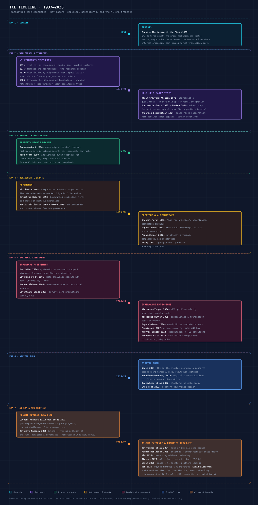

Transaction cost economics (TCE) grew from Coase's question — why do firms exist? — into the most empirically tested theory of the firm. Its core claim, discriminating alignment (match governance to transaction attributes), survives forty years of testing: asset specificity is the single most robust predictor of vertical integration ever documented in management research. The last five years add a new chapter: the digital economy and AI are not falsifying TCE — they are changing the nature of specificity (codifiable, non-rival assets), the source of uncertainty (model trajectories), and the governance menu itself (platforms, commons, algorithmic governance, agent-mediated coordination).
How to introduce it: Coase asked why firms exist at all if the price mechanism already coordinates production so well — and answered that using the price mechanism is not free, so a firm grows until the cost of organizing one more transaction in-house equals the cost of buying it in the market.
Question. In a specialized exchange economy normally coordinated by prices, why do we observe firms — islands where an entrepreneur directs resources by fiat rather than by market exchange? And, given that firms exist, what sets their size?
Argument. Using the price mechanism is costly: discovering what the relevant prices are, negotiating and concluding a separate contract for each exchange, and — with long-term contracts — coping with uncertainty about future wants. A firm arises because it is cheaper to govern a series of transactions under one long-term contract in which the entrepreneur directs resources, substituting a single centralizing relationship for many separate market exchanges. The firm is therefore defined not by production technology but by the suppression of the price mechanism in favor of entrepreneurial direction. Its boundary follows from marginal reasoning: a firm expands until the cost of organizing one additional transaction within the firm equals the cost of carrying out the same transaction through the open market or through another entrepreneur. Rising costs of internal organization — diminishing returns to management, a higher probability of misdirecting factors as the entrepreneur's span grows — are what stop the firm from swallowing the whole economy.
Method & evidence. A purely verbal, conceptual argument rather than an empirical study. Coase builds the case from observable institutional facts — why employment contracts exist, why a sales tax or rationing scheme can by itself call firms into being, why some market transactions persist — and closes by stating the marginal-cost equilibrium that determines firm size. The recurring illustration is the employment relation, in which a factor of production moves from a series of market transactions into the direction of an entrepreneur within limits.
Findings. The firm exists because marketing costs — the costs of using the price mechanism — make internal direction cheaper for some transactions; its size is fixed at the margin where the cost of internal organization just equals the cost of market exchange. This makes "firm versus market" a problem of substitution at the margin, tractable with Marshallian tools.
Position. This is the founding question of the entire theory-of-the-firm field. It answers Knight's contention (in Risk, Uncertainty and Profit) that firm size is a matter of historical accident rather than general principle, and it extends Marshallian marginal analysis to the boundary of the firm. The paper sat almost dormant for decades; Williamson's transaction cost economics is the research program that operationalized its question into a predictive theory.
Grounded in: full JSTOR PDF read via pdftotext (Economica 4(16), pp. 386–405); Zotero metadata. No empirical numbers. This is a theory paper, so no sample or coefficients apply.
How to introduce it: Williamson's 1971 paper moved the unit of analysis from technology to transaction costs, arguing that vertical integration is best understood as an efficient response to "market failures" — small-numbers bargaining and information impactedness — rather than to economies of scale or monopoly.
Question. When should a firm vertically integrate? The prevailing accounts explained integration either by technology or by the pursuit of monopoly; Williamson asks whether integration can instead be an efficient response to failures of the intermediate-product market.
Argument. Markets and hierarchies are alternative modes of governance, and the choice between them turns on "market failure considerations." The key failures are small-numbers bargaining, which emerges when idiosyncratic investments transform a competitive relation into a bilateral dependency, and "information impactedness" — asymmetric information that makes contracts costly to write, monitor, and enforce. These rest on two behavioral assumptions that become the bedrock of TCE: bounded rationality (contracts are inevitably incomplete) and opportunism (self-interest seeking with guile). When market contracting hazards are severe, internal organization — hierarchy — economizes on the costs the market incurs.
Method & evidence. A conceptual and analytical paper (American Economic Association Papers and Proceedings), not an empirical study. It lays out the market-failure framework and applies it to vertical-integration examples, without econometric data.
Findings. Vertical integration is a governance response to market failure, not merely a technological necessity or a device for extending monopoly.
Position. The bridge between Coase (1937) and Markets and Hierarchies (1975). It names "market failure" as the operative mechanism and introduces the behavioral assumptions — bounded rationality and opportunism — that the later theory formalizes.
Grounded in: publisher abstract and secondary summaries via web search; training knowledge. This paper is not in Zotero (no key supplied); no page-level numbers verified.
How to introduce it: Markets and Hierarchies turned Coase's question into a full research program: it argues that an "organizational failures framework" — bounded rationality plus opportunism, compounded by information impactedness and small-numbers bargaining — explains why some transactions are governed by markets and others by firms.
Question. What determines the efficient assignment of transactions between markets and internal organization (hierarchies), and how should that logic inform antitrust treatment of nonstandard contracting practices?
Argument. The book's centerpiece is the organizational failures framework. Because people are boundedly rational, contracts cannot specify everything; because people are also opportunistic (self-interest seeking with guile), promises cannot simply be relied upon. Add information impactedness (costly, asymmetric information) and small-numbers bargaining conditions, and market contracting becomes hazardous for a wide class of transactions. Internal organization economizes on these hazards — it can use fiat, employment relations, and internal dispute resolution — but it carries its own limits: bureaucratic costs and the attenuation of high-powered incentives. Governance is therefore chosen among discrete structural alternatives (market versus hierarchy), a comparative-institutional choice, not a continuous marginal one.
Method & evidence. A theoretical synthesis built from contract law, organization theory, and the economics of information, with a major applied chapter on antitrust. That chapter argues that many nonstandard contracting practices — vertical integration, tying, franchise restrictions, resale price maintenance — that courts treated as presumptively anticompetitive should be re-examined as potentially efficiency-enhancing responses to transaction costs, shifting the burden toward a comparative assessment of the efficiency and market-power explanations.
Findings. Markets and hierarchies are alternative governance structures, and the choice between them is governed by the organizational failures framework rather than by technology alone; antitrust analysis of vertical practices must entertain the transaction-cost (efficiency) rationale.
Position. The book consolidated TCE as a distinctive research program, answering and extending Coase and supplying the framework Williamson dimensionalized in his 1979 article and 1985 book. Its antitrust chapter reshaped the efficiency defense in antitrust economics and remains the canonical statement of the transaction-cost view of vertical restraints.
Grounded in: training knowledge plus web-search summaries (SSRN/Cambridge). This book is not in Zotero (no key supplied) and no page-level numbers are verified.
How to introduce it: This is the paper that made TCE operational: it maps each transaction's three dimensions — uncertainty, frequency, and asset specificity — onto a matching governance structure, giving the discriminating-alignment hypothesis its canonical form.
Question. How should governance structures be matched to the attributes of transactions so as to economize on transaction costs?
Argument. Transactions differ along three dimensions: uncertainty, frequency, and the degree to which they require transaction-specific (idiosyncratic) investments — asset specificity. Governance structures differ in their costs and adaptive capacities. Efficient governance matches the two: occasional, non-specific transactions are handled by classical (market) contracting; occasional but specific transactions by trilateral governance (recourse to a third-party arbitrator); recurrent non-specific transactions by bilateral (relational) contracting; and recurrent transactions requiring idiosyncratic assets by unified governance — internal organization, i.e., vertical integration. This matching is the discriminating-alignment hypothesis: transactions, which differ in their attributes, should be aligned with governance structures, which differ in their costs and competencies, in a transaction-cost-economizing way.
Method & evidence. A conceptual and analytical paper that develops a matching typology of governance structures and illustrates it with contracting examples (procurement of intermediate goods, construction, and recurrent supply relations), rather than with econometric data.
Findings. Governance should be assigned discriminatingly to transaction attributes, with asset specificity as the pivotal dimension driving the shift from market toward hierarchy as specificity rises.
Position. Refines Coase and the 1975 framework by dimensionalizing the transaction and giving TCE its testable form. It is the direct antecedent of the 1985 book and of the empirical program — Monteverde and Teece, Masten, Joskow, and later David and Han's assessment — that tested and largely confirmed the specificity-to-integration prediction.
Grounded in: Zotero metadata (Journal of Law and Economics 22(2): 233–261) plus training knowledge. No abstract present in the Zotero record; no page-level numbers verified.
How to introduce it: This is TCE's definitive statement: it makes "governance" the unit of analysis and states the discriminating-alignment hypothesis — transactions, which differ in their attributes, should be matched to governance structures, which differ in their costs and adaptive capacities, in a transaction-cost-economizing way.
Question. What is the economic logic that assigns transactions to governance structures (markets, hybrids, hierarchies), and how does that logic explain the institutions of capitalism?
Argument. The book's architecture rests on four building blocks. (1) Behavioral assumptions: bounded rationality and opportunism jointly imply that contracts are necessarily incomplete and promises not self-enforcing. (2) Transaction dimensions: asset specificity (the pivotal one), uncertainty, and frequency describe what distinguishes one transaction from another. (3) Governance structures — market, hybrid, and hierarchy — differ in incentive intensity, administrative control, and the contract-law regime that governs them. (4) Discriminating alignment: assign transactions to governance structures so that hazards are contained at least cost. Two further devices do the analytic work: the "fundamental transformation," whereby a large-numbers bidding situation at the outset is transformed, after idiosyncratic investment, into a small-numbers bilateral dependency; and the k-s contracting schema, in which k measures transaction-specific assets and s measures safeguards — when k > 0 and s = 0, hazards push the breakeven price up, and parties prefer either a safeguard (arbitration, severance, reciprocity) or integration.
Method & evidence. A theoretical synthesis (grounded here in the scanned Chapters 1–3) applied across employment, antitrust, corporate governance, regulation, and the "company town" — each read as a governance-structure problem. The firm is treated as a governance structure, and the board of directors as a safeguard.
Findings. Economic organization is the assignment of transactions (differing in attributes) to governance structures (differing in costs and adaptability) in a discriminating, transaction-cost-economizing way, with asset specificity the key predictor of when hierarchy displaces market.
Position. The mature statement of TCE and the source of the hypothesis that roughly four decades of empirical work tested and largely confirmed (see David and Han 2004). It answers Coase, completes the 1975/1979 agenda, and is the explicit point of departure for the property-rights branch of Grossman and Hart, which formalizes its insight.
Grounded in: scanned Chapters 1–3 read via pdftotext (the Contents page plus the opening chapters on behavioral assumptions, the k-s schema, and the discriminating-alignment statement); Zotero metadata (book key H63HAUBJ). Chapters 4–15 summarized from training knowledge; no page-level numbers beyond the schema verified.
How to introduce it: Klein, Crawford, and Alchian made the hold-up problem precise: once a party sinks a relationship-specific investment, the resulting "appropriable quasi-rent" can be expropriated in renegotiation, so parties under-invest ex ante — and vertical integration or long-term contracts are the response.
Question. Why do firms vertically integrate or write elaborate long-term contracts, rather than transacting spot? The answer lies in post-contractual opportunism over appropriable quasi-rents.
Argument. A quasi-rent is the excess of an asset's value in its current (specialized) use over its value in its next-best use. When an asset is specialized to a particular trading relationship, that quasi-rent is "appropriable" — the other party can credibly threaten to withdraw, capturing part of it in renegotiation after the investment is sunk. Anticipating this hold-up, parties under-invest in relationship-specific assets. Vertical integration (bringing the transaction under common ownership) or long-term explicit contracts realign incentives and prevent the post-contractual expropriation.
Method & evidence. Analytical argument plus the field's canonical case study — General Motors and Fisher Body. Fisher Body made closed auto bodies for GM under a long-term contract; when demand for closed bodies surged, the contract's terms (notably cost-plus pricing and plant-location provisions) created hold-up opportunities, and GM ultimately resolved them by acquiring Fisher Body. The authors read this acquisition as vertical integration driven by appropriable quasi-rents, the founding empirical illustration of the hold-up logic.
Findings. Appropriable quasi-rents arising from relationship-specific investments are the efficient cause of vertical integration and of long-term contracting; common ownership removes the incentive to expropriate.
Position. Formalized the hold-up logic latent in Coase and Williamson and gave TCE its founding case study. It directly motivates the incomplete-contracts, property-rights formalization of Grossman and Hart (1986), which rebuilds the same incentive logic in a formal model.
Grounded in: Zotero metadata (Journal of Law and Economics 21(2): 297–326) plus training knowledge. The GM–Fisher case details (a 1919 supply contract and GM's 1926 acquisition) are widely documented in the secondary literature and reflect this paper's canonical interpretation; that interpretation was later contested by Coase and others, a debate noted in the case literature. No coefficients or sample sizes apply (theory + case).
transaction cost economics regards vertical integration that is not attended by transaction cost economies as a source, not of power, but of weakness. That is because internal organization always experiences a loss of incentive intensity and added bureaucratic costs as compared with markets and hybrids.
Williamson (1991: 79), "Strategizing, Economizing, and Economic Organization," SMJ 12 (Special Issue).
Grossman and Hart (1986) and Hart and Moore (1990) shifted attention from ex post haggling to ex ante incentives. In their framework, ownership means residual control rights over non-human assets; because contracts are incomplete, allocating ownership shapes each party's incentive to invest in relationship-specific assets. The theory's sharpest prediction for the AI era is the concept of inalienable human capital: capabilities embedded in people cannot be bought and sold as assets, so the governance of knowledge-intensive activity must rely on contracts, incentives, and alliances rather than acquisition. This is the single most useful sentence for reading the Microsoft–OpenAI deal structure.
How to introduce it: Grossman and Hart asked what ownership actually means and answered: ownership is the residual right to control an asset when contracts are incomplete — so integration reallocates control rights, and with them each party's incentive to make relationship-specific investments.
Question. What are the costs and benefits of vertical (and lateral) integration, and — since contracts cannot specify every contingency — who should own an asset?
Argument. Because contracts are incomplete, there are always residual rights of control: the right to decide uses of an asset not specified in the contract. Ownership is precisely the purchase of these residual control rights. Integration changes who owns assets, which changes the parties' bargaining positions ex post, which in turn changes their incentives to make non-contractible, relationship-specific investments ex ante. Efficient ownership concentrates residual control in the hands of the party whose investment matters most — whose marginal return to investment is most sensitive to control — because that party then avoids hold-up and invests more. This benefit is bought at a cost: the other party's investment incentive is correspondingly reduced. Ownership is therefore chosen to balance these two incentive effects, and neither integration nor non-integration is universally optimal.
Method & evidence. A formal incomplete-contracts model. The canonical illustration is the insurance industry: whether sales agents (mutual form) or the insurance company (stock form) should own the client-list/policy assets depends on whose relationship-specific investment — the agent's selling effort versus the company's reputation and product development — is the more important driver of value.
Findings. Ownership equals residual control rights; integration has both costs and benefits that operate through incentive effects on specific investment; efficient ownership places residual control where investment incentives matter most.
Position. Launched the property-rights (incomplete-contracts) branch as the formal alternative to Williamson's transaction-cost approach, giving Coase's question a tractable formal answer. It shifts emphasis from ex post haggling (Williamson's hold-up) to ex ante investment incentives, and its ownership-as-control-rights definition became the standard vocabulary of the modern theory of the firm.
Grounded in: Zotero metadata (Journal of Political Economy 94(4): 691–719) plus training knowledge. No abstract present in the Zotero record; the insurance illustration and the residual-control definition are standard features of the paper. No coefficients or sample sizes (formal theory).
How to introduce it: Hart and Moore extended the property-rights theory to the nature of the firm, with one enduring lesson: because human capital is inalienable — it cannot be bought or sold — ownership of non-human assets is what defines the firm and shapes who has the incentive to invest.
Question. What determines which assets a firm owns, and who should control the firm's non-human assets when contracts are incomplete?
Argument. The paper extends Grossman and Hart's framework. Because contracts are incomplete, control over non-human assets — machines, buildings, client lists, patents — determines bargaining power and hence incentives to invest. Its pivotal insight is that human capital is inalienable: people always retain control over their own effort and skill, so human capital cannot be transferred by ownership, and only non-human assets can be owned. Efficient ownership assigns control of non-human assets to the party whose relationship-specific investment is most important. Thus workers should own the assets when their human capital is the key non-contractible investment (as in partnerships), while the owner of physical capital should hold control when the assets' value depends critically on that owner's decisions. The model also derives how asset complementarity shapes ownership: assets that are strictly complementary are best placed under common ownership, while economically independent assets may be efficiently owned separately.
Method & evidence. A formal model of property rights over assets. It analyzes who should own complementary versus independent assets and when a worker versus an owner of physical capital should hold control, yielding comparative-statics predictions rather than empirical tests.
Findings. The firm is defined by the non-human assets it owns; asset ownership is allocated to maximize investment incentives, with inalienable human capital as the central constraint explaining why firms cannot simply purchase people's capabilities.
Position. Completed the formal property-rights theory of the firm begun by Grossman and Hart. Its inalienable-human-capital argument is the direct source of later reasoning about knowledge-intensive firms, partnerships, and why acquisitions cannot buy tacit capabilities — the most-cited bridge from property-rights theory to strategy, and the framework for reading structures such as the Microsoft–OpenAI deal, where control of compute (non-human assets) substitutes for ownership of talent.
Grounded in: Zotero metadata (Journal of Political Economy 98(6): 1119–1158) plus training knowledge. No abstract present in the Zotero record; the inalienable-human-capital and asset-complementarity results are standard features of the paper. No coefficients or sample sizes (formal theory).
TCE is unusually well tested. The first wave used procurement data: Monteverde and Teece (1982) in automotive components, Masten (1984) in aerospace, Walker and Weber (1984) in manufacturing, Anderson and Schmittlein (1984) in sales forces, Joskow (1987) in coal contracts. Specificity measures — engineering effort, site specificity, firm-specific human capital — consistently predicted integration or longer contracts. The five studies below are the papers every TCE empiricist cites as the founding tests.
How to introduce it: The first systematic test of Williamson's hold-up logic in a real industry: it asks whether GM and Ford bring component production in-house precisely when a supplier, by doing the pre-production engineering, would acquire transaction-specific know-how the automaker cannot cheaply recover — and finds that they do.
Question. Why do automobile assemblers backward-integrate into component production? The paper refines transaction cost theory to emphasize industrial know-how: when producing a part generates specialized, non-patentable know-how that is costly to transfer, the assembler faces switching costs and exposure to opportunistic recontracting.
Argument. The mechanism is supplier switching costs. If an assembler relies on an outside supplier for pre-production development, the supplier gains a first-mover advantage in transaction-specific know-how. Because know-how cannot be transferred "like a book of blueprints," the assembler is locked in and can be held up; backward integration is the more prudent course. The key empirical proxy is applications engineering effort — the specialized engineering a supplier must invest to develop a component for a given assembler.
Method & evidence. A list of 133 automotive components was obtained from an assembler; for each, the authors coded whether General Motors and Ford produced it in-house (≥80% of output, with robustness at 70% and 90% thresholds) for U.S. production in 1976. Applications engineering effort was measured by an industry expert's engineering-cost rating of component development (two independent ratings correlated at .8). Controls included component specificity (30 items coded as non-company-specific), firm identity, and five subsystem dummies. Estimation was by probit.
Findings. Engineering effort was positive and highly significant across all three integration thresholds (coefficient 0.146, t = 3.57 at the 80% threshold), confirming that more supplier-specific development effort raises the probability of in-house production. Component specificity was also positive and significant (0.819, t = 3.33), and GM was significantly more integrated than Ford. The subsystem dummies were mostly insignificant, giving only mild support to a "systems effects" story.
Position. This is the founding procurement test of the discriminating-alignment hypothesis, and the first to relocate asset specificity from physical equipment to human capital and know-how. It directly operationalizes Klein, Crawford & Alchian's (1978) appropriable-quasi-rents logic and precedes — and is explicitly built on by — Masten (1984), Walker & Weber (1984), and Anderson & Schmittlein (1984).
Grounded in: full text (JSTOR PDF, Bell Journal of Economics 13(1): 206–213) retrieved via web; probit coefficients and sample size read directly from Tables 1–2.
How to introduce it: A field test inside a single aerospace system that quantifies how much design specificity and complexity matter: holding everything else constant, making a component specialized raised the probability of producing it in-house from under 1% to 31% — and to 92% if the part was also complex.
Question. What determines whether a producer makes or buys each input in a defense-related system? Masten tests the transaction-cost claim that idiosyncratic assets and complexity raise the costs of market contracting relative to internal organization.
Argument. Specialized, durable assets create quasi-rents that invite post-contractual bargaining, while complexity makes contracts rigid and hard to specify ex ante. Internal organization substitutes adaptive, sequential decision-making for costly contingency contracting, but it carries an "administrative burden." The make-or-buy choice therefore turns on whether specificity and complexity outweigh that burden.
Method & evidence. An aerospace system containing 1,887 component specifications was classified make or buy by company managers. Questionnaires on item attributes yielded 34 observations (cells of similar items), statistically weighted to reflect their distribution. Two specificity measures were built — design specificity (highly specialized / somewhat specialized / standard) and site specificity (colocation) — plus a three-level complexity ranking (A/B/C items). A probit model estimated the dichotomous make-or-buy choice.
Findings. Complexity (coefficient 1.887, t = 5.44) and specialization (3.370, t = 6.55) were both positive and highly significant; the colocation and standard-item coefficients had the expected signs but were insignificant. Specialization raised the internalization probability from under 1% to 31% for uncomplex parts, and from 2% to 92% for complex parts. Case-level detail corroborated this: hard printed wire boards required unique production assets and were brought in-house, while flexible boards, though specialized in design, could be made on standard equipment and stayed with suppliers. Government procurement policy — taking title to special tooling ("quasi-vertical integration") and multiyear contracting to deter "buying in" — matched the theory's prescriptions.
Position. Masten extends Monteverde & Teece's (1982) single-industry, qualitative-ranking strategy to a defense setting, and is the methodological template (choice-based sampling, probit on make-or-buy) that Walker & Weber (1984) and later tests build on. Its "asset design beats input design" observation anticipates the later debate over measuring specificity.
Grounded in: full text (PDF from Zotero, Journal of Law and Economics 27(2): 403–417); coefficients, sample sizes, and probability figures read directly from Table 2 and Figure 1.
How to introduce it: The first study to model make-or-buy as a structural-equation system rather than a single regression — and its headline result is a surprise: plain comparative production cost, not asset specificity, is the strongest predictor of whether a component is made or bought.
Question. What predicts make-or-buy decisions for components, and how well do transaction-cost variables (uncertainty, competition) perform once production costs are included?
Argument. Drawing on Williamson's "efficient boundaries" model, the paper treats make-or-buy as a choice between market and hierarchy in which both production-cost differentials and transaction-cost differentials matter. Two types of uncertainty are distinguished — volume uncertainty (demand fluctuations) and technological uncertainty — alongside supplier market competition (a proxy for asset-specificity hazards) and buyer production experience.
Method & evidence. Data were 60 make-or-buy decisions, over three years, in a component division of a large U.S. automobile company (the 60 emerged "by exception" from a larger set with adequate information). Hypotheses were tested in a multiple-indicator structural-equation model estimated with LISREL, using unweighted least squares and jackknife standard errors.
Findings. Comparative production costs — the supplier's production-cost advantage over the buyer — was the strongest predictor of the make-or-buy decision, with a path coefficient more than twice as large as any other. Volume uncertainty and supplier market competition had small but significant effects in the predicted directions. Technological uncertainty had a low, insignificant, and wrongly signed effect. The authors conclude their results give "mixed support for Williamson's theory," and note the small sample and single-division design limit generalizability.
Position. Walker & Weber supply the influential volume/technological split of environmental uncertainty that later work (including Geyskens et al., 2006) adopts, and they are the canonical source for the recurring finding that production costs compete with transaction costs in explaining boundaries. They answer Monteverde & Teece (1982) and Anderson & Schmittlein (1984) by insisting that transaction-cost effects be judged against a production-cost baseline.
Grounded in: full text (PDF from Zotero, Administrative Science Quarterly 29(3): 373–391); sample size, LISREL estimates, and the "mixed support" verdict read directly from the Results and Discussion sections.
How to introduce it: The first test that moves TCE out of the factory and into a human-asset setting: it asks why a manufacturer uses its own salaried sales force rather than independent reps, and finds that hard-to-evaluate performance and firm-specific human capital — not transaction frequency — drive integration.
Question. When should personal selling be organized as a hierarchy (direct, employee salespeople) rather than a market (independent manufacturers' representatives), where physical assets are negligible and the only relevant assets are human?
Argument. A salesperson's knowledge of a company's procedures and a customer's idiosyncrasies is a relationship-specific human asset; the more such company- and customer-specific knowledge matters, the greater the lock-in and the more attractive a direct sales force. The authors also add performance-evaluation difficulty ("internal uncertainty") and test Williamson's claim that specificity is the strongest determinant, followed by uncertainty.
Method & evidence. Field data from sales managers at 16 electronic component manufacturers (145 usable observations) were used to estimate a logistic (logit) model of the rep-versus-direct choice, with seven predictors: transaction-specific assets, environmental uncertainty, difficulty of performance evaluation, transaction frequency, two specificity–uncertainty interaction terms, and company size.
Findings. Three variables were significant and positive: difficulty of performance evaluation (0.782, ratio 2.73), company size (0.470, 2.31), and transaction-specific assets (0.616, 2.16). Contrary to the model, transaction frequency was not significant, and the specificity × environmental-uncertainty interaction was not significant. Adding the transaction-cost variables significantly improved fit over a company-size-only model (likelihood-ratio test 14.54 against a critical χ²(6) of 12.6). Notably, internal uncertainty outranked specificity, reversing Williamson's stated ordering for this setting.
Position. Anderson & Schmittlein extend TCE to forward integration into distribution and to human-asset specificity, and their result that frequency and the specificity–uncertainty interaction underperform is one of the earliest documented weaknesses that David & Han (2004) later codify at scale. The paper anchors the marketing branch of TCE and is the direct predecessor of Anderson (1985) and Gatignon & Anderson (1988).
Grounded in: full text (PDF from Zotero, RAND Journal of Economics 15(3): 385–395); logit coefficients and the sample description read directly from Table 1 and Section 3.
How to introduce it: The canonical test of TCE where the governance choice is not "make or buy" but how long to commit: Joskow shows that coal suppliers and electric utilities write longer contracts precisely when relationship-specific investments are larger, so that repeated bargaining is replaced by long-term commitment.
Question. How important are relationship-specific investments in determining the duration of contracts negotiated between coal suppliers and electric utilities?
Argument. When a mine, plant, or transport arrangement is tailored to a particular buyer–seller pair, the parties cannot costlessly walk away, so ex post renegotiation is hazardous. Writing a longer contract at the outset locks in the terms of future trade and reduces reliance on repeated bargaining — the contractual analogue of vertical integration.
Method & evidence. The study uses data on 277 coal contracts between coal suppliers and electric utilities. For each contract it develops measures of the duration of the commitment agreed at execution and of the importance of relationship-specific investments (site, physical-asset, and dedicated-asset dimensions characteristic of mine-mouth and coal-type arrangements), then relates the two.
Findings. The results provide strong support for the view that buyers and sellers make longer commitments to the terms of future trade — and rely less on repeated bargaining — when relationship-specific investments are more important. Contract length rises with specificity rather than being driven by the standard spot-market alternative.
Position. Joskow is the bridge between the make-or-buy procurement studies (Monteverde & Teece 1982; Masten 1984) and the governance-of-contract-terms literature: it shows the discriminating-alignment logic governs the terms of market exchange, not only the market-versus-hierarchy boundary. It became the standard citation for specificity → longer-duration contracting and set the template for later energy-contracting work (e.g., Crocker & Masten 1988).
Grounded in: publisher abstract (RePEc / American Economic Association) for the 277-contract sample and the headline finding; training knowledge for context on the specificity dimensions. Gaps: exact coefficient sizes and the mine-mouth/dedicated-asset operationalizations were not retrieved from the full text, so they are stated qualitatively.
How to introduce it: The first rigorous "vote count" of TCE's evidence base: coding every statistical test of the theory's core propositions across 63 articles, it concludes support is real but uneven — strong for asset specificity, weak for uncertainty and for performance.
Scope & method. David & Han take 308 statistical tests from 63 published journal articles, selected through an explicit funnel: 4,555 initial title/abstract hits in ABI/Inform and EconLit (built from "transaction cost" plus keywords drawn from Williamson's 1985 index) were filtered down through full-article screening to the final 63, which span 26 journals. Each test is coded against the theory's six core tenets (the asset-specificity, uncertainty, frequency, and discriminating-alignment predictions) as supported, nonsignificant, or counter to the theory, using a p < .05 cutoff. Beyond counting support, the authors code paradigm consensus — how consistently central constructs are operationalized and which relationships are actually tested. This is a vote-counting assessment, deliberately narrower but more explicit than the earlier narrative reviews (Joskow 1993; Shelanski & Klein 1995).
What it finds. Overall, 144 of 308 tests (47%) were supported, 133 (43%) nonsignificant, and 31 (10%) significant in the wrong direction. Asset specificity was the most-tested independent variable (107 tests) and the best-supported: 60% supported, only 4% counter. Uncertainty was the second most-tested (87 tests) but the weakest: only 24% supported and 16% counter. Frequency was rarely tested (13 tests) but well-supported when it was (69%, none counter). The asset-specificity × uncertainty interaction — a central Williamson prediction — appeared in only 30 tests (43% supported), and only 7 of the 63 studies tested it explicitly. By dependent variable, the classic hierarchy-vs-market choice was the most examined (117 tests, 45% supported), while hierarchy-vs-hybrid (26 tests, 38% supported but 42% counter) and hybrid-vs-market (26% supported) fared worst; performance outcomes were barely tested and poorly supported (hierarchy performance: 10% supported).
Verdict & agenda. Support is strongest for the asset-specificity → hierarchy prediction, and within that, strongest for specialized skills (75% supported) versus specialized physical assets (53%), across 27 distinct operationalizations of specificity. The authors read the pattern as evidence of limited paradigm consensus: core constructs are measured inconsistently, uncertainty's conditional logic is usually ignored, and performance is under-tested. They also note that the asset-specificity prediction draws the most tests partly because it has accumulated the most empirical attention, while the theory's other pillars lag. Their agenda is a more thorough empirical grounding of the theory's foundations — better construct measurement, explicit tests of the specificity–uncertainty interaction, and direct performance implications.
Position. David & Han sit between Williamson's "empirical success story" claim and its critics (Ghoshal & Moran 1996): they grant TCE real predictive content but reject triumphalism. Geyskens et al. (2006) later build on and refine their vote count with a psychometric meta-analysis, and Carter & Hodgson (2006) cite their "mixed" verdict as a starting point for a more skeptical reading.
Grounded in: full text (PDF from Zotero, Strategic Management Journal 25(1): 39–58); the 308-test/63-article corpus, the selection funnel, and all percentages read directly from Tables 1–5 and the Results section.
How to introduce it: The quantitative meta-analysis that upgraded TCE from a vote count to pooled effect sizes across 200 studies: it confirms that asset specificity drives both "make" and "ally" over "buy," but overturns the claim that specificity dominates uncertainty.
Scope & method. A psychometric (Hunter–Schmidt) meta-analysis of 200 empirical papers on make/buy/ally decisions, yielding 209 independent samples, 557 correlations, and a combined N of 91,006. The authors estimate a meta-analytic correlation matrix (44 individual meta-analyses) and then a path model that controls for redundancy among predictors. Eleven hypotheses structure the test: asset specificity, volume uncertainty, technological uncertainty, and behavioral uncertainty as predictors of the hierarchy-vs-market ("make vs. buy") choice; the same dimensions as predictors of the relational-vs-market ("ally vs. buy") choice; and the governance–performance link. They distinguish environmental uncertainty into volume and technological components (following Walker & Weber 1984), separate out behavioral uncertainty, and model the governance–performance link while accounting for the selection (endogeneity) concern.
What it finds. For the make-versus-buy (hierarchy vs. market) choice, asset specificity (β = .19), volume uncertainty (.07), and behavioral uncertainty (.13) all significantly predict "make," while technological uncertainty (−.14) predicts "buy." For the ally-versus-buy (relational vs. market) choice, asset specificity is an even stronger predictor (.29) of allying, while all three uncertainty types push toward the market. Behavioral uncertainty matters most where performance is hard to verify, pushing firms toward hierarchy. Two negative results are central: asset specificity did not have greater predictive power than uncertainty (the joint effect of the three uncertainty constructs exceeded that of specificity), and transaction-dimension interactions contributed little (main effects dominate). On performance, aligned governance paid off: both hierarchical (.10) and relational (.44) governance, chosen to match transaction hazards, were positively associated with performance. A trim-and-fill check found publication bias modest and immaterial to any conclusion.
Verdict & agenda. Strong support for TCE on both make-versus-buy and ally-versus-buy decisions, and — against David & Han (2004) — evidence that TCE can explain relational (hybrid) governance, not just the market/hierarchy poles. The performance effect held for both cost-inclusive and cost-exclusive measures (stronger for the latter: hierarchical .07 vs. .20; relational .40 vs. .57), so the sign is robust. The agenda: refine the asset-specificity construct (its many operationalizations), resolve why specificity is not dominant, and confront the selection/endogeneity problem in governance–performance tests.
Position. Geyskens et al. are the quantitative successor to David & Han (2004), correcting its vote-counting limitations and its pessimism about hybrids, and they rebut critics of TCE's normative claims by showing alignment pays. They also fix the Walker & Weber (1984) volume/technological distinction as the field-standard way to split environmental uncertainty.
Grounded in: full text (PDF from Zotero, Academy of Management Journal 49(3): 519–543); the 200-paper/557-correlation/N = 91,006 corpus, all path coefficients, and the performance-moderator figures read directly from Tables 2–4 and the Results section.
How to introduce it: The definitive economics survey of vertical integration: after sifting a quarter-century of studies, it concludes the empirical regularities are "both consistent and strong" — and that efficiency, not market power, explains almost all of what we observe.
Scope & method. A narrative survey organizing the empirical literature into three rounds of evidence: (1) the integration decision, split into forward integration into retailing (franchising, manufacturer–retailer) and backward integration (the make-or-buy choice); (2) the consequences of integration for prices, quantities, investment, and profits; and (3) the concluding lessons. Studies are grouped by the theory they test — moral-hazard, transaction-cost, property-rights, and market-power models — and tabulated by industry, technique, and the authors' interpretation. The authors also present simple versions of each model to derive the predictions the evidence is organized around.
What it finds. On incidence, the TCE and moral-hazard predictions fare well: asset specificity and non-contractibility jointly predict integration, and incentive problems predict it in retailing. The authors stress that across different industries, time periods, and regions, "the sign of the effect is almost always consistent across studies." On consequences, the headline is that efficiency considerations overwhelm anticompetitive motives in most contexts; even in natural monopolies and tight oligopolies the evidence of anticompetitive harm is weak, and forced divestiture appears misguided — the three studies assessing gasoline divorcement directly (Barron & Umbeck 1984; Vita 2000; Blass & Carlton 2001) unanimously conclude that retail prices and costs rose and hours shortened after it took effect. On the property-rights branch, they find little support in make-or-buy data but more support in manufacturer–retailer and franchisor–franchisee settings.
Verdict & agenda. The regularities are strong enough that the authors entertain a publication-bias worry (confirming papers publish more easily), and they flag the "ubiquitous endogeneity problem": firms self-select into governance, so firm and outlet characteristics are endogenous to the integration decision, and valid instruments are scarce. Their remedies are two-stage/linear-probability and panel approaches, and endogenous-matching corrections (Ackerberg & Botticini 2002). They also stress measurement difficulty — starting with measuring vertical integration itself apart from the contractual arrangements that substitute for it, and the marginal-vs-average distinction that studies often blur. The agenda calls for joint, multi-factor tests (specificity matters only together with non-contractibility), complementarity across decisions, and better measurement.
Position. Lafontaine & Slade consolidate the economics side of the TCE evidence base that Shelanski & Klein (1995) and Klein (2005) began, and they explicitly connect it to the management/strategy literature they set aside. Because they span forward integration, backward integration, and consequences, they absorb the first-wave procurement tests into a single mature canon. Their efficiency-over-market-power verdict is the field's standard answer to the vertical-merger policy question.
Grounded in: full text (PDF from Zotero, Journal of Economic Literature 45(3): 629–685); the three-part organization, the "consistent and strong" verdict, the gasoline-divorcement studies, and the endogeneity/measurement discussion read directly from Sections 1–4 and the Conclusions.
How to introduce it: The census of the entire TCE empirical literature across the social sciences: it counts roughly 900 empirical articles and shows the theory has spread far beyond economics — but that outside business, its use remains piecemeal.
Scope & method. A comprehensive, discipline-by-discipline review of empirical TCE research. The authors generated over 3,500 abstracts and winnowed them to approximately 900 articles that empirically test some aspect of TCE, then categorized these by field. The review covers both business fields — economics (where TCE first developed, especially in industrial organization and energy contracting), strategy and management, marketing, accounting, finance, and organizational theory — and fields outside business, including political science, law and public policy, agriculture, and health. The method is a structured narrative census more than a vote count: its contribution is mapping where TCE has been applied and how coherently.
What it finds. TCE has branched out from its economic roots into a broad set of empirical phenomena, but the depth of application is uneven. Within business, the literature is comparatively deep and systematic — the core asset-specificity prediction has been tested and largely confirmed across procurement, alliances, distribution, and corporate governance. Outside business, the use of TCE reasoning is largely piecemeal: individual studies borrow the framework (the hold-up logic, specificity, opportunism) without building a sustained cumulative program. Across the whole corpus there is considerable support for many central TCE tenets, but the authors also identify a set of lingering theoretical and empirical issues that recur across fields, most prominently around how key constructs are measured and how comparable findings are across disciplines that operationalize transaction costs and specificity differently.
Verdict & agenda. TCE is empirically validated in its core, but the field's cross-disciplinary sprawl has produced uneven measurement and limited comparability. The authors' agenda is to confront those measurement and comparability problems directly, to build theory that travels across disciplines rather than accumulating isolated applications, and to connect the still-separate business and non-business literatures.
Position. Macher & Richman are the natural bookend to David & Han (2004) and Geyskens et al. (2006): where those assess whether TCE is supported, this assesses how far the evidence has spread and how coherent it is across the social sciences. It is the published successor to the Boerner & Macher (2002/2003) working paper that first tallied the field at roughly 600 papers.
Grounded in: publisher abstract (RePEc / De Gruyter) plus the paper's selection description retrieved via web (Scribd copy); the "over 3,500 abstracts → approximately 900 articles" figure and the field categorization come from that text. Gaps: specific per-discipline counts and the exact wording of the measurement/comparability concerns were not fully retrieved, so they are stated at the level of the abstract's "lingering theoretical and empirical issues."
How to introduce it: The skeptical audit of TCE's evidence: re-reading the most-cited tests against Williamson's own predictions, it finds the results are far more mixed than "an empirical success story" — and that even the wins can be explained by a rival competence view.
Scope & method. A critical, study-by-study reassessment of 27 of the most prominent and highly cited TCE empirical studies — 12 vertical-integration tests and 15 hybrid/contract-relationship tests — evaluated against the standards and predictions in Williamson's own writings, rather than by citation count or authorial claim. This differs from David & Han's (2004) vote count by working through each study's measures and interpretation in detail, asking whether the result actually tests the specific proposition Williamson stated.
What it finds. The vertical-integration studies are mixed: no study is fully consistent with Williamson's framework; five are partly consistent; six are partly consistent and partly inconsistent; and one is inconclusive. None of the first-wave classics — Monteverde & Teece (1982), Masten (1984), Walker & Weber (1984), or Anderson & Schmittlein (1984) — earns more than a "partly consistent" verdict, and Joskow's (1987) contract-duration test is judged "inconclusive." The hybrid-relationship studies fare worse: 10 of 15 are inconclusive, three partly consistent, and two partly consistent and partly inconsistent. The authors also note that several studies weakened the tests themselves: Walker & Weber (1984) declined to test the specificity–uncertainty interaction, and Klein et al. (1990) explicitly rejected the need to test transaction frequency. Their central move is a reinterpretation argument: human asset specificity — the measure behind most of TCE's apparent wins — "fits readily into both a TCE and a competence approach," so at least nine of the 12 integration studies could equally be read as evidence for a competence/capabilities explanation (following Monteverde 1995 and Masten et al. 1991). They also cite Masten (1996) that reduced-form estimates do not disclose the magnitude of transaction costs, so even consistent results need not show that transaction costs are being minimized.
Verdict & agenda. The empirical evidence does not decisively support Williamson's TCE: there is "some significant empirical evidence in support of aspects of TCE, but… the picture is rather mixed." Crucially, none of the 27 studies they examined tested rival theories, so the support cannot adjudicate between TCE and competence-based accounts. Their agenda is an explicit program of joint testing of rival approaches, pointing to Argyres (1996), Poppo & Zenger (1998), and Combs & Ketchen (1999) as models, with the integration of TCE and competence explanations as the most productive route.
Position. Carter & Hodgson answer Williamson's (1999, 2000) "empirical success story" claims directly and extend Ghoshal & Moran's (1996) critique into the empirical domain. They concede the "mixed" verdict of David & Han (2004) but go further: the empirical record, by itself, cannot settle the theoretical debate about the nature of the firm because the evidence under-determines which theory is right.
Grounded in: full text (PDF from Zotero, Strategic Management Journal 27(5): 461–476); the 27-study tally, the study-by-study verdict categories, the specific judgments on the first-wave classics and Joskow (1987), and the reinterpretation argument read directly from the Results and Conclusions sections.
Since the publication of Oliver E. Williamson's seminal book, Markets and Hierarchies (Williamson, 1975), transaction cost economics (TCE) has become one of the leading perspectives in the study of management and organizations.
David & Han (2004: 39), "A systematic assessment of the empirical support for transaction cost economics," SMJ 25(1).
How to introduce it: Williamson asks which matters more for economic organization — clever market positioning (“strategizing”) or efficient alignment of transactions (“economizing”) — and answers that economy is the best strategy: efficiency, not power, is the deeper driver of firm boundaries and performance.
Question. Why do some governance structures and firm boundaries persist and win — because of market power, or because of efficiency?
Argument. Williamson contrasts two rival programs in strategy. Strategizing is the power tradition: Porter’s five forces, game-theoretic industrial organization, entry deterrence, positioning, and extracting rents from rivals and customers. Economizing is the efficiency tradition: transaction-cost economizing and discriminating alignment, choosing governance to contain hazards at least cost. His claim is that economizing is first-order and strategizing second-order. Power-oriented moves cannot be sustained without an efficiency basis, and many apparent plays for power are better read as economizing; strategy gains its footing only after governance is aligned. He also warns that TCE predicts performance differences from governance alignment, not from market power.
Method & evidence. A programmatic theoretical essay — no data. It deploys the discriminating-alignment apparatus developed in Markets and Hierarchies (1975) and The Economic Institutions of Capitalism (1985), and it illustrates the priority of economizing with the proposition that vertical integration unattended by transaction-cost economies is a source of weakness, not of power.
Findings. The essay’s conclusion is a reorientation rather than an empirical result: strategy research should treat economizing as its central engine, with strategizing mattering at the margin and in the details but presupposing economizing.
Position. This is the bridge that carried TCE into strategic management, published in the Strategic Management Journal special issue on “Fundamental Research Issues in Strategy and Economics.” It answers Porter (1980) and the game-theoretic strategy program, extends Williamson (1975, 1985), and is later restated in Williamson’s (1999) “Strategy Research: Governance and Competence Perspectives.”
Grounded in: training knowledge of this programmatic essay; the essay’s pages (SMJ 12 special issue, 75–94) as listed in the page’s own reference list; the essay’s verbatim “source of weakness” sentence cross-checked against the page’s existing blockquote. Gaps: no publisher abstract fetched; page-level citations not independently verified.
How to introduce it: Williamson asks how to tell markets, hybrids, and hierarchies apart and match each to the right transaction, and answers by giving governance — not just transactions — a formal anatomy: each form rests on a distinct contract law and a distinct way of adapting.
Question. What are the key differences among the three generic forms of economic organization, and how should transactions be aligned with them?
Argument. Following Simon’s “discrete structural analysis,” Williamson compares alternative forms rather than optimizing at the margin. He dimensionalizes governance along three instruments. First, contract law: markets are supported by classical contract law (“sharp in by clear agreement; sharp out by clear performance”), hybrids by neoclassical contract law with excuse doctrine and arbitration, and hierarchies by forbearance — courts refuse to hear disputes between internal divisions, so the firm becomes its own court of ultimate appeal (a logic he connects to the business-judgment rule). Second, adaptation: Hayek’s autonomous adaptation through prices versus Barnard’s coordinated adaptation through fiat. Third, incentive intensity and administrative control: markets are high-powered with weak control, hierarchies low-powered with strong control. Each form is a coherent “syndrome” of mutually supporting attributes, and hybrid forms that combine inconsistent features fail to arise. The institutional environment enters as a set of “shift parameters” — changes in property rights, contract law, reputation effects, and uncertainty shift the comparative costs of governance.
Method & evidence. A conceptual synthesis combining institutional economics, contract law (Macneil), and organization theory (Barnard, Simon). Illustrations include the Nevada Power coal contract’s arbitration-and-adjustment clause as an instance of neoclassical contracting, and a rebuttal of Alchian and Demsetz’s “nexus of contracts” view, which he argues misses fiat precisely because it neglects the forbearance that defines internal organization.
Findings. The three generic forms are cleanly distinguishable by their coordinating and control mechanisms and their contract-law supports; the cost-effective choice of form varies systematically with transaction attributes, restating discriminating alignment with governance now dimensionalized on both sides.
Position. The paper answers four objections to prior TCE work: the disjunction between the institutional environment and the institutions of governance; the neglect of intermediate hybrid forms; the under-dimensionalization of governance; and the embeddedness problem (a Western bias). It extends Williamson (1979, 1985), and its shift-parameter idea underpins Oxley (1999) and Henisz and Williamson (1999).
Grounded in: full text read from the local publisher PDF (ASQ 36(2): 269–296), pp. 269–296.
How to introduce it: Holmström and Roberts argue the hold-up and property-rights stories give too narrow a view of the firm: real firms solve many problems at once — incentives, common assets, knowledge transfer — so ownership is never pinned down by asset specificity alone.
Question. What determines firm boundaries once we move past the hold-up problem and relationship-specific investment?
Argument. Reviewing transaction cost economics (Williamson) and property-rights theory (Grossman–Hart–Moore), they show the two are cited together but differ in logic and empirical predictions. Their thesis is that the firm is a complex mechanism for coordinating and motivating individuals, facing a much richer set of problems than investment incentives and hold-ups. Ownership patterns respond to agency problems, concerns over common assets (brand and reputation), difficulties in transferring knowledge, and the benefits of market monitoring. The decisive counterexample is the U.S.–Japan contrast in automobile procurement: both regimes involve high relationship-specific investments, yet traditional U.S. assemblers integrated while Japanese assemblers sustained long-term non-integrated subcontracting — so specificity cannot uniquely determine the boundary.
Method & evidence. A Journal of Economic Perspectives essay (explicitly not a survey), built on illustrative cases: the GM–Fisher Body dies (specific tooling costing tens of millions of dollars and near-worthless outside the relationship, from Klein, Crawford, and Alchian), the U.S.–Japan auto comparison, and franchising as a common-brand example. It also notes that worldwide merger and acquisition volume exceeded $1.6 trillion in 1997 as evidence that boundaries are economically significant.
Findings. Boundaries are multi-dimensional, and a single-instrument theory — ownership as the sole incentive lever — is misleading. Their own alternative explanations are offered as tentative and “mostly without a good theoretical foundation,” explicitly to invite new theory rather than to settle the question.
Position. Answers and extends Williamson (1975, 1985), Klein, Crawford, and Alchian (1978), Grossman and Hart (1986), and Hart and Moore (1990). It broadened the boundaries agenda toward agency, knowledge, and capabilities and remains a standard point of reference for why TCE and property-rights theory are complements, not substitutes.
Grounded in: full text read from the local Zotero PDF (JEP 12(4): 73–94), pp. 73–76; the $1.6 trillion (1997) M&A figure verified at p. 73.
How to introduce it: Oxley asks how firms choose among alliance forms — license, cross-license, or equity joint venture — and shows they pick more hierarchical forms when the technology is hard to specify or the alliance’s scope is wide, because that is when appropriability hazards bite.
Question. What determines the governance form of a technology-transfer alliance when the hazard is not hold-up over specific assets but leakage of hard-to-protect knowledge?
Argument. The paper extends TCE from asset specificity to “appropriability hazards” — the weak property rights that surround tacit, hard-to-specify know-how. Alliances are ordered on a market–hierarchy continuum: unilateral contracts (licenses) at the market end, bilateral contracts (cross-licenses, technology sharing) in the middle, and equity joint ventures at the hierarchical end. More hierarchical forms should be chosen when the technology is difficult to specify in a contract and when a wider scope of activities hampers monitoring.
Method & evidence. Ordered probit models on horizontal technology-transfer alliances drawn from the Cooperative Agreements and Technology Indicators (CATI) database. The primary sample comprises 165 alliances between public U.S. manufacturing firms; an expanded sample of 507 adds private and non-manufacturing firms. The design distinguishes design activities (harder to specify) from production and measures alliance scope.
Findings. Strong support for the TCE hypotheses: more hierarchical alliances are chosen for design-intensive and broader-scope (mixed) transactions. Firm-level variables such as R&D intensity and size are statistically insignificant, confirming that transaction attributes, not firm attributes, drive governance choice — a direct correction to the international-business literature that had proxied transaction hazards with firm-level measures.
Position. Answers Pisano (1989, 1990) and Gulati (1995); extends Williamson to the alliance form; and is the foundation for Oxley (1999) and a companion to Gulati and Singh (1998).
Grounded in: full text read from the local Zotero PDF (JLEO 13(2): 387–409), pp. 387–390 and the sample section; the 165/507 sample sizes and the ordered-probit design verified in the text.
How to introduce it: Gulati and Singh ask why alliances differ in their “architecture” — equity joint venture, minority stake, or plain contract — and answer that two distinct hazards, coordination costs and appropriation concerns, push partners toward hierarchical forms.
Question. What determines the governance structure of an alliance, given that alliances span a continuum from contractual to equity-based forms?
Argument. The paper separates two transaction-cost drivers. Coordination costs arise from interdependence and task complexity: as alliance activities are more decomposed across partners, ongoing mutual adjustment and information sharing become harder, and a governance apparatus with hierarchical authority helps. Appropriation concerns arise from the risk that a partner captures a disproportionate share of value — especially when partners are competitors, outcomes are uncertain, or knowledge can leak. Both drivers, they argue, favor hierarchical (equity) forms, while contractual forms suffice when both hazards are low.
Method & evidence. Analysis of alliances announced over 1970–1989 in three industries — biopharmaceuticals, new materials, and automobiles — distinguishing equity joint ventures, minority equity alliances, and non-equity alliances, modeled with ordered or multinomial choice specifications.
Findings. Coordination costs and appropriation concerns each independently raise the probability of hierarchical forms; joint ventures are used when both are high, and non-equity alliances when both are low.
Position. Extends Oxley (1997), which emphasized appropriability, by theorizing coordination costs as a second, separable driver of alliance governance. It is a core bridge between TCE and alliance research and the reference point for the alliance-structure literature that followed.
Grounded in: title and venue verified via OpenAlex; content from training knowledge (the publisher elides the abstract). Gaps: exact sample size and coefficient magnitudes not verified.
How to introduce it: Oxley asks whether country-level institutions — specifically patent protection — change how firms govern alliances, and shows they do: weaker intellectual property protection pushes firms toward equity joint ventures, but mainly for transactions that are hard to specify on paper.
Question. How does the institutional environment shape the governance of inter-firm alliances?
Argument. The paper brings Williamson’s institutional environment — the “shift parameters” of the 1991 ASQ analysis — to bear on transaction-level governance. Stronger patent protection in the partner’s country lowers the cost of relying on contracts because proprietary technology is legally protected; weaker protection raises the risk of leakage and favors the hierarchical safeguards of an equity joint venture. Crucially, the effect is conditional on the transaction: where know-how is complex and difficult to specify (design-intensive or multi-activity alliances), equity is chosen even under strong protection, because contracts cannot adequately capture the obligations.
Method & evidence. Cross-national analysis of alliances formed by U.S. manufacturing firms with foreign partners, modeling the equity-versus-contractual choice as a function of the partner country’s intellectual-property regime together with transaction attributes.
Findings. Stronger intellectual-property protection shifts governance toward contractual (non-equity) forms; the shift is attenuated for harder-to-specify transactions. The institutional environment thus operates as a shift parameter that changes the relative costs of governance rather than dictating a single form.
Position. Builds on Oxley (1997) and operationalizes Williamson’s shift-parameter idea cross-nationally; it is a foundation of the institutional-environment stream, alongside Henisz and Williamson (1999) and Henisz (2000).
Grounded in: title and venue verified via OpenAlex; content from training knowledge. Gaps: exact sample size and coefficient magnitudes not verified.
How to introduce it: Poppo and Zenger ask whether formal contracts and relational governance are substitutes or complements, and their survey overturned the prevailing view: they are complements — managers couple detailed contracts with strong relationships, and the combination improves performance.
Question. Do detailed formal contracts crowd out (substitute for) or reinforce (complement) relational governance such as trust and cooperation?
Argument. The received view holds that complex contracts signal distrust and undermine relational governance, making the two substitutes. Poppo and Zenger argue the opposite: formal contracts and relational governance are complements. Contracts clarify roles, contingencies, and remedies, while relational governance adapts to the unforeseen; each supports the other, and their joint use should improve exchange performance. They also predict that the two arise from distinct antecedents, which further reinforces their complementarity in practice.
Method & evidence. Survey of managers of information services exchanges, measuring contractual complexity and relational governance, modeling their determinants, and testing the effect of their combination on exchange performance (satisfaction).
Findings. Support for complementarity: managers couple increasingly customized contracts with high levels of relational governance (and vice versa); the two have distinct origins; and their interdependence underlies improvements in exchange performance.
Position. Answers the substitutes intuition traceable to Macaulay (1963) and the embeddedness and trust tradition (Granovetter 1985); it reframed the relational-contracting agenda and set up Weber and Mayer (2011) and Schepker et al. (2014).
Grounded in: publisher abstract retrieved via OpenAlex; content from training knowledge. Gaps: exact sample size not stated in the abstract; coefficient magnitudes not verified.
How to introduce it: Weber and Mayer argue that a contract’s effect depends on its frame: a promotion-framed contract (emphasizing gains) and a prevention-framed contract (emphasizing safeguards) induce different emotions, expectations, and behaviors, so contract design is about framing, not just safeguarding.
Question. How does a contract’s design — beyond its formal safeguards — shape the exchange and the ongoing relationship between parties?
Argument. A conceptual theory paper. Drawing on regulatory focus theory (promotion versus prevention focus) and expectancy violation theory, the authors argue that contracts frame how parties interpret the exchange. Promotion-framed contracts highlight opportunities, aspirations, and shared gains and foster cooperation; prevention-framed contracts highlight penalties, safeguards, and obligations and foster vigilance. Each frame induces different emotions, behaviors, and expectations, and each fits different contexts — so the same structural terms can produce opposite relational outcomes depending on framing.
Method & evidence. Theory development with no data; it derives propositions by combining regulatory focus and expectancy violation literatures with the contract-design literature.
Findings. A contract’s impact is mediated by its frame, so effective contract design requires matching the frame to the context and to the desired relationship.
Position. Extends Poppo and Zenger (2002) — contracts do more than safeguard — and connects contract research to behavioral theory; it is a stepping stone to Schepker et al.’s (2014) coordination-and-adaptation agenda.
Grounded in: publisher abstract retrieved via OpenAlex (regulatory focus and expectancy violation theories stated there); content from training knowledge. No empirical numbers (pure theory).
How to introduce it: Schepker and colleagues review the interfirm-contracting literature and argue its future lies beyond structure and safeguarding: contracts also coordinate and adapt, and the field’s open gaps are outcome assessment, strategic options, and how relational and contractual capabilities combine.
Scope & method. A narrative review and synthesis of the interfirm-contracting literature, organized around what contracts do. It draws on transaction cost economics (the “optimal governance” and safeguarding function), relational capabilities (building cooperation and trust), firm capabilities, relational contracts, and the real-option value of a contract.
What it finds. Transaction cost economics is the most prominent perspective on contracts’ safeguarding function, but no single perspective explains contract structure; other perspectives are necessary. The review shows that contract research is moving away from a narrow focus on contract structure and its safeguarding function toward a broader focus that also highlights adaptation and coordination.
Verdict & agenda. Contracts perform multiple functions — control and safeguarding, coordination, and adaptation — and future work must assess the consequences of contracting (outcome assessment); strategic options, decision rights, and the evolution of dynamic capabilities; the contextual constraints on relational capabilities and on contracting capabilities; how contract features act as complements, substitutes, and bundles; and how contract structure interacts with social process.
Position. The agenda-setting review that consolidates Poppo and Zenger (2002) and Weber and Mayer (2011) into a “functions of contracts” program; the standard reference for the relational-contracting stream’s next decade.
Grounded in: publisher abstract retrieved via OpenAlex (title, venue, and the named research gaps); the review’s structure reconstructed from training knowledge. Gaps: corpus size and any meta-analytic estimates not verified.
How to introduce it: Parmigiani asks why firms simultaneously make and buy the same good — “concurrent sourcing” — and shows it is a distinct strategic choice, not a midpoint on a make/buy continuum, driven by a mix of transaction-cost, production-economy, and capability forces.
Question. Why do firms concurrently source — make and buy the same homogeneous input — given that it doubles setup and coordination costs?
Argument. Transaction cost economics, neoclassical production economics, and the capabilities view each predict a dichotomous make/buy decision, and none explains concurrent sourcing. Parmigiani combines the three: firms make to build and protect capabilities and gain production efficiency, and buy to benchmark suppliers, access scale economies, and hedge uncertainty; concurrent sourcing captures both sets of benefits. She also tests whether concurrent sourcing is a point on a make/buy continuum or a categorically distinct choice.
Method & evidence. Survey of small U.S. manufacturing firms in two industries — metal stamping and powder metal. Of 453 firms contacted (366 in stamping, 87 in powder metal), 193 firms responded, yielding 805 sourcing decisions; concurrent sourcing is defined with a 10% threshold for the minority source.
Findings. Support for all three theories, with concurrent sourcing emerging as a distinct choice: the forces pushing a firm toward making are not symmetric with those pushing it toward buying, so firms concurrently source to gain the different benefits of both modes — for example, using an outside supplier as a benchmark to monitor internal costs and drive process improvement.
Position. Extends the make/buy and plural-forms literature (Bradach and Eccles 1989); introduces “concurrent sourcing” as a clean hybrid form; and is the empirical precursor to Puranam, Gulati, and Bhattacharya’s (2013) formalization.
Grounded in: full text read from the local Zotero PDF (SMJ 28(3): 285–311); the 453/193/805 figures and the 10% threshold verified from the methods section.
How to introduce it: Puranam, Gulati, and Bhattacharya formalize plural sourcing: how much to make versus how much to buy depends on complementarities across modes and constraints within them, and ignoring either biases make-or-buy studies.
Question. Given that firms both make and buy the same input, what determines the optimal mix — how much to make and how much to buy?
Argument. A formal optimization model. Arguments for making and for buying do not by themselves pin down the mix; the mix requires accounting for (a) complementarities across modes — internal and external sourcing can reinforce each other, as when internal production informs external procurement benchmarks or external volume sustains internal scale — and (b) constraints within modes, such as capacity or organizational limits. Nonlinearities in the differential advantages of make versus buy then determine the interior optimum. The authors also show how dichotomized measures — for example, Monteverde and Teece’s (1982) 80% bought cut-off — bias estimates in make-or-buy studies that ignore plural sourcing.
Method & evidence. Theory paper with no data: comparative statics of an optimization framework with complementarity and constraint parameters, plus an analysis of estimation bias from ignoring plural sourcing, complementarities, and constraints.
Findings. Plural sourcing is optimal when complementarities and constraints make an interior mix dominate either pure mode; the optimal make/buy ratio shifts with those parameters, yielding testable predictions, and standard dichotomous designs can misestimate transaction-cost effects.
Position. Formalizes the plural-sourcing agenda (Bradach and Eccles 1989; Parmigiani 2007); the analytical complement to empirical concurrent-sourcing work; and it reframes firm-boundary theory from a “whether” question to a “how much” question.
Grounded in: full text read from the local Zotero PDF (SMJ 34(10): 1145–1161). Note: the page’s reference list gives pp. 1135–1161; the PDF and the Zotero record show 1145–1161.
individuals appear to know more than they can explain. That knowledge can be tacit has broad implications for understanding the difficulty of imitating and diffusing individual knowledge.
Kogut & Zander (1992), "Knowledge of the firm, combinative capabilities, and the replication of technology," Organization Science 3(3), restating Polanyi (1966).
How to introduce it: Kogut and Zander ask why firms exist, and answer that firms beat markets at something transaction-cost economics overlooks: the sharing and transfer of knowledge. The firm is a “social community” whose organizing principles make it cheaper to move both information (“who knows what”) and know-how (“how to do it”) inside the organization than across a market.
Question. Why do firms exist, and what sets their boundaries — in particular, the make-or-buy decision?
Argument. The paper develops a knowledge-based account of the firm that deliberately drops TCE’s premise of opportunism. Knowledge is held by individuals but is embedded in “organizing principles,” the higher-order regularities by which members cooperate, so it cannot simply be bought or hired away; that is why hiring new workers is not equivalent to changing a firm’s skills. Firms are social communities that transfer knowledge efficiently. Knowledge is classified into information (declarative — “who knows what”) and know-how (procedural — “how to organize a research team”), each varying along the dimensions of codifiability and complexity; these dimensions determine how easily knowledge can be replicated internally versus imitated by rivals. “Combinative capabilities” — the capacity to synthesize current and acquired knowledge — let firms create new knowledge by recombining existing skills. Growth is path-dependent: what a firm has done before predicts what it can do next, and its cumulative knowledge acts as a portfolio of options, or platforms, on future but uncertain markets. A central paradox follows: codifying and simplifying knowledge to speed its internal replication also increases the risk of imitation.
Method & evidence. A conceptual/formal theory paper. It builds on Polanyi’s (1966) tacit-knowledge puzzle and reinterprets Winter’s (1987) claim that technology transfer and imitation are “blades of the same scissors.” The make-or-buy decision serves as the canonical example, and the paper derives testable hypotheses about boundaries without appealing to opportunism. No empirical data are presented.
Findings. The paper offers a rival explanation of firm existence and boundaries: firms exist to create and transfer knowledge efficiently, and they invest in assets that correspond to a combination of their current capabilities and expectations about future opportunities — not merely to curb transaction costs.
Position. A foundational statement of the knowledge-based view. It answers Coase–Williamson transaction-cost theory (which locates the firm in transaction costs and self-interest), drawing on Nelson & Winter (1982) and Penrose (1959), and it seeded the KBV later formalized by Conner & Prahalad (1996), Grant (1996), and Nickerson & Zenger (2004).
Grounded in: full text pp. 383–385 (PDF in Zotero, item GGES4EPL). No empirical data; specific hypotheses not enumerated verbatim.
How to introduce it: Nickerson and Zenger shift the knowledge-based view from exchanging knowledge to generating it. They treat the firm’s unit of analysis as the problem, and predict that how complex a problem is dictates both whether it is solved inside or outside the firm and how the search for a solution is organized internally.
Question. How should a firm organize in order to efficiently generate knowledge or capability, rather than merely economize on knowledge exchange?
Argument. Existing KBV work focuses on hierarchy’s efficiency in exchanging knowledge, and its two supporting arguments are mutually contradictory (one says firms avoid knowledge transfer, the other that they enable it). The authors instead take the problem as the unit of analysis. A problem’s complexity determines the optimal method of solution search — directional (guided, theory-driven) versus heuristic (trial-and-error) — and the optimal way of organizing that search. The distinguishing feature among organizational forms is how each resolves conflict over the selection of solution trials, i.e., how it chooses the path of search. Markets work when problems are decomposable and knowledge is dispersed across many independent solvers; as problems become more complex and interdependent (requiring costly knowledge sharing), authority-based hierarchy becomes efficient; between these lie consensus-based forms. Efficiency requires a discriminating alignment between problem type and governance.
Method & evidence. A formal/theoretical model that compares governance alternatives — market, authority-based hierarchy, and consensus-based hierarchy — against the complexity of the problem being solved, using a solution-search framing. No empirical data are reported.
Findings. The theory predicts that governance alternatives should be matched in a discriminating way to problems based on their relative benefits and costs in governing solution search. It is among the first to treat simultaneously the boundary choice (internal versus external) and the choice among alternative internal approaches to organizing.
Position. Advances the knowledge-based view beyond exchange, explicitly criticizing Kogut & Zander, Conner & Prahalad, Grant, and Demsetz for focusing on knowledge exchange and for offering contradictory accounts of hierarchy. It builds on Simon’s problem-solving tradition and is a direct precursor to the Argyres & Zenger (2012) capability–transaction-cost synthesis.
Grounded in: full text abstract and pp. 617–618 (PDF in Zotero, item 9V2ERAUV). No empirical data.
How to introduce it: Jacobides and Winter argue that you cannot explain who does what in an industry with capabilities or transaction costs alone — the two co-evolve. Their headline claim is that capability differences are a necessary condition for vertical specialization: falling transaction costs only produce specialization where capabilities along the value chain are heterogeneous.
Question. How do capabilities and transaction costs combine, over time and at the industry level, to determine vertical scope and the institutional structure of production?
Argument. The authors argue that transaction costs and capabilities are fundamentally intertwined, not separate determinants. Capability differences are a necessary condition for vertical specialization, and transaction-cost reductions only lead to specialization when capabilities along the value chain are heterogeneous. Four evolutionary mechanisms shape vertical scope: (1) a selection process, driven by capability differences, dynamically shapes scope; (2) transaction costs are changed endogenously by firms that try to reshape the transactional environment to raise their profit and market share; (3) changes in vertical scope alter the capability-development process — how firms improve operations over time; and (4) those changes reshape the industry’s capability pool and the roster of qualified participants. The analysis is deliberately systemic, dynamic, and co-evolutionary, in contrast to the prevailing firm-level, short-horizon studies.
Method & evidence. A conceptual/theoretical paper illustrated by two contrasting historical cases: the U.S. mortgage-banking industry, which shifted from integrated to disintegrated production, and the Swiss watch-manufacturing industry, which moved from disintegration to integration.
Findings. Vertical specialization requires both low transaction costs and heterogeneous capabilities; transaction costs are endogenous, not a fixed background parameter, and the industry’s vertical structure is an emergent outcome of the co-evolution of capabilities and transaction costs.
Position. Bridges transaction-cost economics and the resource/capability view, building on Williamson’s (1999) call to ask how a specific firm with pre-existing strengths should organize, and on micro-level work by Walker & Weber (1984), Poppo & Zenger (1998), Argyres (1996), and Hoetker (2005). It fills the gap left by firm-level, static analyses and anticipates the Argyres & Zenger (2012) synthesis.
Grounded in: full text abstract and pp. 395–396 (PDF in Zotero, item U3ZJTZFN). No quantitative estimates; case evidence summarized qualitatively.
How to introduce it: Mayer and Salomon integrate the resource-based view with transaction-cost economics by showing that technological capabilities are really “governance capabilities.” Their counterintuitive finding is that strong capabilities don’t push firms to integrate on their own — they only matter in the presence of contractual hazards, by making outsourcing safer.
Question. How do a firm’s technological capabilities and the contractual hazards of a transaction jointly determine governance — whether the firm makes internally or buys from a supplier?
Argument. The authors combine RBV and TCE. TCE holds the individual transaction as the unit of analysis and predicts internalization when contractual hazards are high, but it keeps firm capability constant. The authors argue that strong technological capabilities improve a firm’s ability to govern transactions — selecting capable suppliers, monitoring their progress, and sharing knowledge with them — so capabilities translate into “governance capabilities” that reduce the costs imposed by contractual hazards, making outsourcing feasible. They predict that contractual hazards encourage internalization, that weak capabilities increase subcontracting, and that strong capabilities have no independent effect: they matter only in the presence of certain hazards, and they should matter more for hold-up and observability hazards than for appropriability hazards.
Method & evidence. A random sample of 405 service contracts from a single information-technology firm (“Compustar”) spanning 1986–1998. The dependent variable is the firm’s governance choice — subcontract versus perform internally — and capabilities and hazards were measured with the help of the firm’s engineers and managers; the panel structure helps isolate the hypothesized variables from other heterogeneity.
Findings. Contractual hazards encouraged internalizing transactions; weak technological capabilities increased the likelihood of subcontracting; strong capabilities had no independent effect and mattered only in the presence of certain contractual hazards. This explains why firms facing similar contracting hazards organize the same transactions differently.
Position. Integrates RBV and TCE empirically, answering Williamson’s (1999) call to study how existing capabilities influence governance. It extends Argyres (1996), Leiblein & Miller (2003), Hoetker (2005), and Poppo & Zenger (1998), and sits alongside Nickerson & Zenger (2004) in the capabilities–governance line.
Grounded in: full text abstract and pp. 942–943 (PDF in Zotero, item QZ2PPEGR). Sample size (405 contracts), firm, and years verified from the PDF; coefficient sizes not extracted.
How to introduce it: Zenger, Felin, and Bigelow organize the whole firm-boundary literature around four questions — the virtues of markets, why markets fail, the virtues of integration, and why firms fail. Their argument is that the main theories (transaction-cost, property-rights, incentive, and knowledge-based) each answer only part of those questions, and that a complete theory must integrate all four.
Scope & method. A narrative review and theoretical synthesis of the theory of the firm–market boundary (no meta-analysis, hence no pooled effect estimates). The corpus is the core body of theory developed over roughly four decades across economics, sociology, and organization theory. The organizing device is four central questions: What are the virtues of markets in organizing assets and activities? What factors drive markets to fail? What are the virtues of integration (hierarchy)? And what factors drive organizations to fail?
What it finds. The core theories each identify a different “directional force” on the boundary, answering a different subset of the four questions. Transaction-cost economics (Coase, Williamson) stresses market failure from asset specificity and opportunism, the firm’s virtue in attenuating opportunism through hierarchy, and its failure in bureaucratic costs; its comparative strength is on the second and third questions. Property-rights theory (Grossman–Hart–Moore) stresses hold-up and incomplete contracts, locating the boundary in the allocation of residual control rights over non-contractible investments, so it speaks mainly to why markets fail and why integration can help. Incentive/measurement theories (Holmström, Milgrom, Roberts) locate the boundary in incentive intensity, measurement costs, and multitask complementarities among activities, giving equal attention to why strong market incentives misfire and why firms bundle complementary activities. Knowledge-based theories (Kogut & Zander, Grant, Nickerson & Zenger, Conner & Prahalad) argue the firm exists to create and transfer knowledge — especially tacit knowledge — rather than merely to curb costs, foregrounding what firms do well that markets cannot. The authors treat these not as rivals but as partial accounts of tightly interrelated forces, each illuminating one direction of the boundary while leaving the others underdeveloped.
Verdict & agenda. The theories are complementary rather than competing: each is partial, and a complete theory of the firm must address all four questions at once, because the boundary is set by the joint operation of market virtues, market failures, firm virtues, and firm failures. The named agenda is to build an integrated framework that accounts for these forces and for their interaction, rather than continuing to position the theories as competing explanations of the same boundary choice; the authors flag the absence of such an integrated account as the field’s central unresolved task.
Position. A field-organizing synthesis that stands above the individual literatures it surveys — Williamson’s TCE, Grossman–Hart–Moore property-rights theory, Holmström–Milgrom incentive theory, and the knowledge-based view — and frames the integration agenda later pursued by Argyres & Zenger (2012) and Jacobides & Winter (2005).
Grounded in: the paper’s published abstract (SSRN version, retrieved verbatim via the Organizations and Markets blog) plus training knowledge for the four-theory detail. Gaps: the full Annals text (pp. 89–133) was not opened, so the four theory labels and the agenda wording are stated from training knowledge and may not match the paper’s exact section headings.
How to introduce it: Argyres and Zenger argue that the capabilities-versus-transaction-costs debate has generated “more heat than light,” because the two are dynamically intertwined. Their synthesis: the capabilities a firm has today reflect its past transaction-cost-driven boundary choices, and transaction costs in turn depend on which capabilities the firm chose to develop.
Question. Are capabilities and transaction costs competing or intertwined explanations of firm boundaries, and can they be unified into one consistent theory?
Argument. The authors argue that treating capabilities and transaction costs as independent, competing explanations is fundamentally misleading. The two are interdependent in a specific dynamic way: transaction-cost considerations loom large in originally forming capabilities and in deciding whether to retain, develop, or sell them off, so the current distribution of capabilities across firms and suppliers reflects transaction costs operating in the past or present. Conversely, TCE is limited because it takes the characteristics of a firm’s transactions as largely exogenous, whereas capabilities considerations guide which strategic investments a firm pursues and therefore which transactions it must govern in the first place. Their key assertion is that an asset’s capability or value to any firm is determined by its complementarity with that firm’s bundle of other assets, so the value of an asset is a bundle-specific, firm-specific concept; the superiority of a capability considered in isolation does not determine who will own it in the long run.
Method & evidence. A theoretical synthesis that draws on the logic of both literatures and responds to calls for integrating theories of the firm. No empirical data are presented.
Findings. The paper offers a strategic, unified theory of boundary determination that overcomes each perspective’s limitations, and guides managers on how current governance choices aimed at developing certain capabilities also shape the firm’s future boundaries.
Position. Settles the capabilities-versus-TCE debate pursued by Coombs & Ketchen (1999), Leiblein & Miller (2003), Jacobides & Hitt (2005), and Jacobides & Winter (2005); responds to Mahoney & McGahan’s (2007) call for integration; and extends the problem-solving view of Nickerson & Zenger (2004).
Grounded in: full text abstract and pp. 1–2 (PDF in Zotero, item 89DZNWB4). No empirical data.
How to introduce it: Henisz and Williamson extend transaction-cost economics from domestic to multinational actors by adding a second source of hazard: politics. Their claim is that the familiar discriminating-alignment logic carries over — governance should match the level of both contractual hazards (from the transaction) and political hazards (from the country’s political and regulatory environment).
Question. How does the institutional environment — within and between countries — condition the organization of economic activity once multinational actors are admitted into transaction-cost analysis?
Argument. The paper argues that TCE’s implicit focus on domestic investors can be relaxed without abandoning its core. The discriminating alignment between the level of hazards and the mode of governance carries over to an open economy, but now the alignment reflects hazards arising from the nature of the transaction (contractual hazards) and from the nature of the political and regulatory environment (political hazards). The institutional environment operates at two levels — an informal level (norms, customs, mores, religion) and a formal level (the polity, judiciary, and contract and property law), with the formal level emphasized. The analysis is a bottom-up, micro-analytic view of the nation-state that asks how economic activity gets organized under different institutional regimes, and it treats governance modes as markets, hybrids, firms, and bureaus.
Method & evidence. A conceptual/theoretical paper. The argument proceeds in four steps: hold the institutional environment constant and examine governance modes; examine how changes in the institutional environment (over time or between countries) affect domestic firms’ investment and organization; extend the analysis to the multinational corporation as a key actor; and briefly examine countries that experienced recent economic crises that altered investor perceptions of the institutional environment.
Findings. Political and contractual hazards jointly determine economic organization, so governance choices should reflect both the transaction’s attributes and the host polity. A stated by-product is that one ought to be able to infer gross features of a country’s institutional environment from the organization of economic activity observed there.
Position. Extends Williamson’s transaction-cost framework into the institutional and international domain, laying the conceptual foundation for the political-hazards research program that Henisz operationalizes in his 2000 study of multinational entry mode.
Grounded in: full text abstract and pp. 261–263 of the open-access PDF (repository.upenn.edu copy). No empirical data; no numbers quoted.
How to introduce it: Henisz asks when a multinational entering a foreign country should take a local joint-venture partner instead of a wholly owned subsidiary. His answer: political hazards push firms toward joint ventures, but only when contractual hazards from the partner are low — because a partner who can fix your politics problem can also exploit it.
Question. How do political hazards — the risk that a host government will opportunistically expropriate or change policy — shape a multinational’s choice of market entry mode?
Argument. The paper posits that the effect of political hazards on entry-mode choice varies across firms depending on the contractual hazards they face from potential joint-venture partners. As political hazards rise, the multinational faces a growing threat of opportunistic expropriation by the government; partnering with host-country firms that have a comparative advantage in dealing with the host government can safeguard against this. But as contractual hazards rise, the joint-venture partner’s incentive to manipulate the political system for its own benefit at the multinational’s expense also rises, which erodes the hazard-mitigating benefit of forming a joint venture. The effect of political hazards on entry mode is therefore moderated by the level of contractual hazards.
Method & evidence. A two-stage bivariate probit estimation testing these hypotheses on a sample of 3,389 overseas manufacturing operations by 461 firms across 112 countries.
Findings. Political hazards increase the likelihood of choosing a joint venture (with a local partner) over a wholly owned subsidiary, but this effect is attenuated where contractual hazards from the partner are high — consistent with the moderation argument.
Position. A foundational empirical statement of the political-hazards program in international business, building directly on Henisz & Williamson (1999). It gives multinational strategy a measurable, institutional answer to the entry-mode question and underpins Henisz’s later POLCON (political constraints) measurement agenda.
Grounded in: the paper’s abstract retrieved via the OpenAlex API (item not in Zotero). Sample figures (3,389 operations; 461 firms; 112 countries) and the two-stage bivariate probit design come from that abstract; specific coefficient magnitudes were not verified.
How to introduce it: Ghoshal and Moran argue that Williamson’s transaction-cost economics is not just incomplete but dangerous for managers, because its assumptions about opportunism can become self-fulfilling. They insist organizations are not substitutes for failed markets — they create value through a distinctive logic markets cannot replicate.
Question. Are the prescriptions that transaction-cost economics gives managers sound, or are they “bad for practice”?
Argument. The critique rests on three main criticisms. First, opportunism is an overstated and underspecified behavioral assumption: Williamson conflates opportunism as an attitude with opportunism as behavior, and once opportunism is treated as a variable (as psychology and organization theory require), hierarchical controls — fiat, monitoring, sanctions — can increase rather than curb opportunism, producing a self-fulfilling prophecy in which sanctions breed distrust and resentment that call for still more sanctions. Second, TCE ignores the “organizational advantage”: organizations are not mere substitutes for structuring efficient transactions when markets fail, but possess unique advantages for governing certain activities through a logic very different from the market’s — purposive adaptation, purpose, socialization, and shared identity. Third, TCE is “bad for practice” through a double hermeneutic: because the theory is taught to and used by managers, its pessimistic assumptions and prescriptions (avoid dependence, install safeguards) erode the trust and cooperation on which real organizations depend, changing the very reality the theory purports to describe.
Method & evidence. A conceptual critique grounded in organization theory and psychology — the attitude–behavior literature, the theory of reasoned action, social-control and motivation research — rather than original data. It frames the modern economy through Simon’s (1991) “organizational economy.” The journal published Williamson’s reply, “Economic Organization: The Case for Candor,” in the same issue.
Findings. The authors conclude that TCE’s prescriptions are likely “not only wrong but also dangerous,” and they argue for building a different theory attuned to the sources of organizational advantage.
Position. The canonical assault on Williamson’s transaction-cost economics and the market-failure view of the firm. It anchors the “organizational advantage” side of the boundary debate, is answered by Williamson’s same-issue reply, and stands behind later knowledge-based and organizational-economics responses (Kogut & Zander, Conner & Prahalad, Nahapiet & Ghoshal).
Grounded in: Zotero abstract (item N4XIDIMY) and full text pp. 13–21 (PDF). The three criticisms are paraphrased from the paper’s own sections (“The Concept of Opportunism,” “The Self-Fulfilling Prophecy,” “The Organizational Advantage,” “The Double Hermeneutic”); Williamson’s reply is noted from the same issue.
How to introduce it: This paper argues that TCE's opportunism assumption is too narrow, and replaces it with a broader envelope concept — bounded reliability: people fail to keep commitments not only when they deceive strategically (opportunism as intentional deceit) but also when they sincerely change their minds or quietly drop priorities (benevolent preference reversal). Reliability, not just opportunism, is bounded.
Question. Why do commitments inside multinational enterprises (MNEs) so often fail — and is Williamson's opportunism assumption the right behavioral micro-foundation for explaining that failure? The paper answers that the opportunism-versus-trust debate is framed wrongly, and that both sides rest on a partial account of why promises break.
Argument. TCE (and internalization theory) rest on two envelope concepts: bounded rationality and opportunism. The bounded-rationality assumption is widely accepted; the opportunism assumption ("self-interest seeking with guile") has been repeatedly criticized — famously by Ghoshal & Moran (1996) — for caricaturing human nature, and the standard alternative (trust) is equally unsatisfactory because it cannot handle the cases where commitments fail through no malice at all. The authors propose bounded reliability (BRel) as the parallel, complete envelope: people are bounded in their reliability just as they are bounded in their rationality. Within global MNE management it has two main components: opportunism as intentional deceit, and benevolent preference reversal — actors who sincerely intend to honor a commitment at one moment, then shift priorities, lose focus, or quietly drop the promise without any intent to deceive. (A later articulation of the concept, in Verbeke's subsequent work, distinguishes a third component, integrity-seeking failure; the 2009 article itself names the two.)
Method & evidence. Conceptual paper with case analyses of nine global MNEs illustrating the mechanisms underlying failed commitments inside the MNE — head-office–subsidiary relations where promises break through a mix of deliberate withholding and benign priority shifts. The cases are used to show that the bounded-reliability lens captures failed commitments more fully than opportunism alone.
Findings. Bounded reliability subsumes opportunism as one of its components, so the theory loses nothing by the substitution, while gaining the ability to explain commitment failure that involves no guile. Adopting BRel keeps TCE's other behavioral pillar (bounded rationality) intact, so the comparative-institutional logic of TCE and internalization theory survives — and, the authors argue, becomes more legitimate in the social sciences because its behavioral micro-foundations are no longer hostage to a caricatured view of human nature.
Position. The paper stands in the international-business internalization tradition (Buckley & Casson; Hennart; Rugman) and answers the long-standing behavioral-assumptions critique of Williamsonian TCE — the same line of attack as Ghoshal & Moran (1996) — by strengthening rather than abandoning the assumptions. It also engages the trust literature: where the trust-versus-opportunism debate treats the two as rival foundations, bounded reliability reframes trust as a governance-relevant variable inside a broader behavioral envelope. For the AI-era discussion of behavioral assumptions (e.g., the role of goal frames and non-opportunistic failure in Weber & Mayer 2011 and the bounded-rationality-relaxation argument of Wan 2026), bounded reliability is the natural companion: if rationality is being relaxed by GenAI, the reliability envelope still binds.
Grounded in: publisher abstract via RePEc/IDEAS (Journal of International Business Studies 40(9): 1471–1495, DOI 10.1057/jibs.2009.44) and the repository record at the University of Reading (centaur.reading.ac.uk/34290). The two components are taken from the abstract verbatim; the note that a later articulation adds a third component (integrity-seeking failure) reflects the concept's subsequent elaboration in Verbeke's textbook work and is flagged as such, not as the 2009 article's own claim. Full text not read in this session.
The digital turn asked whether near-zero-marginal-cost information goods break the theory. The emerging answer: no — the theory's comparative logic survives, but the inputs change. The five papers below each rewrite one input of the theory for the digital economy.
How to introduce it: This paper asks whether digitalization breaks the classic internalization-theory logic about which assets a multinational should keep inside the firm, and answers that it splits the firm’s ownership advantages into technology versus human-capital types — while the network itself becomes both a governance mode and a new source of advantage.
Question. How does digitalization alter internalization theory’s assumptions about firm-specific assets (FSAs) and, with them, its predictions about how digital service multinational enterprises (SMNCs) govern cross-border transactions?
Argument. The authors invoke Simon’s near-decomposability concept to explain how digitalization separates two distinct types of FSA — technology and human capital. Drawing on modularity and skill complexity, they then split each type: technology FSAs into core versus peripheral, and human-capital FSAs into generic versus advanced. The transferability and appropriability of each FSA type drives its propensity to be internalized rather than sourced through a network. The core claim is that, with rising digitalization, the network takes on a dual role — as a governance mode and as a strategic resource — so that network advantages (On) emerge as a distinct strategic resource that merits study separately from the traditional asset-based (Oa) and transaction-based (Ot) ownership advantages.
Method & evidence. This is a conceptual, theory-building paper. It reasons from internalization theory’s canonical assumptions, borrowing from modularity (near-decomposability), skill complexity, and network economics — particularly increasing returns to scale — to derive propositions about FSA internalization propensity in the digital age. Its reference point is the international-business internalization tradition rather than a dataset.
Findings. Digital SMNCs need not internalize uniformly: core technology and advanced human-capital FSAs are the assets most likely to be kept in-house because they are hardest to transfer and appropriate, whereas peripheral technology and generic skills are more likely to be sourced through networks. Because networks exhibit increasing returns, the advantages they confer operate through a different logic than asset- or transaction-based advantages and therefore call for their own theorizing.
Position. The paper sits in the internalization-theory line that runs from Buckley and Casson through Hennart and Rugman, updating that line for digital service multinationals and extending the ownership-advantage component of Dunning’s eclectic paradigm. It fills the gap between a mature theory built on physical, brick-and-mortar assets and an economy in which services, skills, and networks are increasingly the assets that matter.
Grounded in: Zotero abstract and metadata (Journal of International Business Studies 50(8): 1372–1387). The mapping of Oa/Ot/On onto Dunning’s ownership advantage is domain-knowledge context. Gaps: exact proposition wording not verified against full text.
How to introduce it: This paper maps “who does what” in artificial intelligence and finds the sector is dominated by a handful of Big Tech firms that sit simultaneously upstream in computing, downstream in applications, and at the top of academic research — while AI adoption is confined to firms that can both digitize and access high-quality data.
Question. Who does what in the AI sector, and how have the interdependencies among AI’s developers, manufacturers, and users co-evolved across firms, communities, and geographies?
Argument. The authors move beyond treating AI as a general-purpose technology or a bundle of applications and instead apply the evolutionary, sectoral-systems approach. They distinguish three roles — AI enablement, AI production, and AI consumption — and trace the emerging cospecialization between firms and communities. Methodologically, the paper uses AI as a case to showcase how evolutionary thinking itself has shifted, from national and sectoral systems of innovation to triple-helix and innovation ecosystems and, most recently, to digital platforms.
Method & evidence. This is an empirical-qualitative study: a granular mapping of the firms, institutions, and communities arrayed along the AI value chain, with a comparative account of how the sector evolved in three geographies — China, the United States, and the European Union.
Findings. AI provision is characterized by the dominance of a small number of Big Tech firms. Their downstream use of AI (search, payments, social media) underpinned much of the recent progress, and they also supply the necessary upstream computing power (cloud and edge). These same firms dominate top academic institutions in AI research, further reinforcing their position. AI is adopted by, and benefits, only the small percentage of firms that can both digitize and access high-quality data. A handful of firms are building global AI ecosystems, with the sector evolving differently across the three geographies.
Position. The paper belongs to the industry-architecture and sectoral-systems literature (Nelson and Winter; Malerba; Jacobides’s own work on industry architecture) and extends it into AI while connecting to platform and ecosystem scholarship. Its contribution is to demonstrate, through AI, how evolutionary analysis has moved from national/sectoral systems toward platform-centered ecosystems — a bridge between the older innovation-systems tradition and the newer platform-governance agenda.
Grounded in: Zotero abstract and metadata (Strategy Science 6(4): 412–435). Gaps: specific firm names and geography-level detail not re-verified against the full text.
How to introduce it: This paper reframes platforms as “meta-organizations” — organizations of organizations that are less hierarchical than firms yet more tightly coupled than markets — and uses that lens to sort out the three fronts on which platforms compete.
Question. What organizational features of platform ecosystems explain how they compete, given that a platform owner must coordinate multiple participants whose interests are not all aligned?
Argument. A platform’s architecture is a modular, interdependent system of a core and complementary components bound together by design rules and an overarching value proposition. This makes a platform ecosystem a meta-organization: it lacks the hierarchical instruments of a firm but is far more coordinated than the decentralized decision-making of markets. The authors foreground three salient organizational features — the sources of authority or power in the ecosystem, the motivation and incentives a platform uses to attract participants, and its governance and coordination structures — and argue that these features are what shape how platforms compete.
Method & evidence. This is a conceptual essay that introduces a Strategic Management Journal special issue. It synthesizes the special issue’s papers under an organization-design frame rather than testing hypotheses with data.
Findings. The three organizational features bear on platform competition along three distinct dimensions: (a) against traditional incumbents as platforms enter and establish themselves in new markets; (b) against other platforms to secure an advantageous market position; and (c) against the different participants on the platform itself, over how jointly created value is shared. The authors close by naming directions for future research on each front.
Position. The paper speaks to the platform and ecosystem literature (Jacobides, Cennamo, and Gawer; Teece) by importing the meta-organization concept of Ahrne and Brunsson into platform strategy. It answers the tendency to treat platforms as either markets or firms by positioning them as a distinct organizational form in between, and it sets the organizational-design agenda that subsequent governance-focused work — including the Chen et al. review in this section — builds upon.
Grounded in: Zotero abstract and metadata (Strategic Management Journal 43(3): 405–424). Gaps: specific special-issue papers not individually re-verified.
How to introduce it: This review treats the digital platform as a distinct organizational form — a meta-organization — and organizes nearly two decades of platform research into eight incentive-and-control mechanisms, then ties them together through a value–governance–design framework.
Scope & method. A systematic literature review. The authors searched EBSCO’s Business Source Complete for articles with “platform(s)” or “two-sided market(s)” in the title, abstract, or keywords, restricted to 2000 through May 2021 and to the FT50 management, economics, entrepreneurship, innovation, and information systems journals plus related outlets (such as Journal of Economics & Management Strategy and Long Range Planning). The initial search returned 609 articles, which were screened in stages to those focused on digital (not analogical) platforms and on owner–complementor governance: 514, then 303, then 162 empirical papers; an ancestry search of references cited by at least five sample articles added 27 more, yielding a final dataset of 189 papers. The papers were coded inductively into eight incentive–control dimensions.
What it finds. Drawing on classic organizational governance theory, the review holds that digital platforms are a distinct organizational form in which incentive and control mechanisms routinely take center stage. It identifies four incentive mechanisms — sharing of resources, provision of information, conferring autonomy, and giving rewards — and four control mechanisms — access control, output control, behavioral control, and external relationship control. It then maps a large set of idiosyncratic design features onto these mechanisms: for example, APIs and SDKs (resource sharing), developer conferences and communication channels (information), decentralization and modularity (autonomy), revenue-sharing and certification (rewards), screening and access fees (access), reputation scores and ratings (output control), anti-manipulation techniques (behavioral control), and exclusivity or reduced compatibility (external relationship control).
Verdict & agenda. The review’s core contribution is an integrative framework linking three building blocks — value, governance, and design — and it uses that framework to set a research agenda: identifying contingency factors that condition optimal governance and design choices; deepening knowledge of how governance and design evolve over time; producing more direct evidence on platform value creation and appropriation; and extending organizational governance research to questions of platform boundaries. Its judgment is that the field has rich, fragmented evidence on individual design features but lacks a coherent organizational-theoretic account of why they cohere.
Position. The paper answers the platform literature’s dominant framing of platforms as markets or networks (McIntyre and Srinivasan; Rietveld and Schilling) by importing organizational governance theory — Barnard on authority and incentives, Ménard on hybrid arrangements — into platform research. It positions the platform as a meta-organization alongside the firm and the market, thereby connecting the platform-governance agenda to the transaction-cost tradition that runs through this review.
Grounded in: Zotero abstract, metadata (Journal of Management 48(1): 147–184), and full text methodology plus Table 2 (PDF pp. 8–10). The corpus counts (609 → 189) and the eight dimensions are taken from those pages. Gaps: the value–governance–design framework’s fine detail not re-read beyond the outline.
How to introduce it: This essay asks whether transaction cost economics still explains the boundaries of the firm when transactions go digital, and argues it does — while showing that three features of digital exchange (reputation systems, personal data, and free/non-pecuniary transactions) stretch TCE’s boundary conditions and define its research agenda.
Question. Can transaction cost economics still illuminate the organization of economic activity — the choice between firm and market — now that a growing share of transactions are digitally mediated?
Argument. TCE’s unit of analysis is the transaction, and digitization changes the transaction itself. The authors isolate three characteristics that loom larger online than offline: (1) reputation mechanisms that curb the asymmetric information underlying opportunism and hold-up; (2) private, personally identifiable data that is conveyed in the transaction and effectively serves as a form of payment; and (3) non-pecuniary, or free, transactions. Their two-sided thesis is that digital transformation helps probe the boundary conditions of TCE, and that TCE remains a useful lens for firm boundaries and regulation. They lay out four research agendas — trust and privacy, digitization and firm boundaries, regulation, and reputation as self-regulation — and discuss data portability as a way to lower hold-up by cutting switching costs.
Method & evidence. This is an agenda-setting essay rather than an empirical test. It synthesizes the empirical literature on reputation and platforms — Mayzlin, Dover, and Chevalier and Luca and Zervas on fake reviews, Nosko and Tadelis on the reputational externality, Kapoor and Tucker on unfair ratings — and on non-pecuniary production such as Wikipedia, open source software (Lerner and Tirole), and Greenstein and Nagle’s “digital dark matter.”
Findings. On reputation systems: because digitally recorded reputations substitute for face-to-face trust, TCE would predict less vertical integration in digital markets with well-functioning reputation mechanisms — yet this remains an unverified theoretical prediction, with freelancer platforms such as Upwork as suggestive evidence. On non-pecuniary exchange and community production: Wikipedia and open source show near-complete vertical dis-integration, in which activity once done inside a firm is now done by crowdsourced individuals governed as a commons; Wikipedia effectively destroyed the paid encyclopedia industry’s value. On firm boundaries: digitization’s effect on firm size is theoretically ambiguous, plausibly producing a few very large firms alongside a vast gig-economy of independent contractors.
Position. The paper extends Coase and Williamson’s transaction-cost tradition into the digital economy and responds to Macher and Richman’s empirical assessment of TCE, while engaging the two-sided-markets and platform literature (Rochet and Tirole; Parker and Van Alstyne). It fills the gap between a theory built for brick-and-mortar exchanges and a digital economy in which trust, data, and free community production are the salient transactional realities.
Grounded in: full text of the essay (Harvard Business School Working Paper 21-009, 2020) and the Strategic Organization publication record (DOI 10.1177/14761270241228674). The author names cited above are drawn from that text. Gaps: the published Strategic Organization version’s pagination was not checked against the working paper.
The last five years first produced a round of stocktaking — the field's most-cited recent review, a general-theory defense, and a marketing-side agenda — and then a wave of new empirical work asking what AI does to firm boundaries.
How to introduce it: What has transaction cost theory accomplished in its first five decades, and where should it go next? Cuypers, Hennart, Silverman and Ertug answer that the theory has outgrown its make-or-buy origins into a sprawling and partly fragmented literature — and that its future lies in fixing weak measurement, building a genuinely comparative theory of governance, and turning to hybrids, institutions, platforms and digital markets.
Scope & method. This is a critical narrative review in Academy of Management Annals (volume 15, issue 1, pages 111–150), not a counting meta-analysis. Where earlier surveys tallied empirical findings — David and Han (2004) across the whole field, Geyskens, Steenkamp and Kumar (2006) on make-or-buy, Zhao, Luo and Suh (2004) on entry modes — Cuypers and colleagues instead reassess TCT’s assumptions, key constructs, and evolving logic, drawing chiefly on strategy and international business. Their stated goal is a “roadmap” toward a pluralistic version of TCT that reconciles advances that have not diffused across fields.
What it finds. The paper reconstructs what the field has achieved. TCT’s core prediction, from Williamson (1985: 18), is that transactions — which differ in their attributes — are assigned to governance structures — which differ in their adaptive capacities and costs — in a discriminating way. This rests on two behavioral assumptions: bounded rationality and opportunism, defined as “self-interest seeking with guile” (Williamson, 1975: 255). From the make-versus-buy question the theory expanded to horizontal diversification, the multinational enterprise, strategic alliances, supply-chain relationships, and public–private partnerships. Equally important, the roster of transaction attributes grew: asset specificity was joined by behavioral uncertainty, appropriability, credible commitments, and relational governance. The review documents that this expansion was field-specific — strategy scholars added appropriability (Teece, 1986; Oxley, 1997), international business scholars elevated behavioral uncertainty (Hennart, 1982), and marketing scholars contributed credible commitments (Heide & John, 1988) — which is precisely why the literature risks fragmentation.
Verdict & agenda. The essay’s centerpiece is a challenge list with named suggestions. (1) Measuring asset specificity. Secondary-data studies proxy specificity with R&D or marketing intensity, often at industry level, which may not reflect true specificity and can bias results; survey studies often measure the amount of investment rather than its residual value outside the transaction, and most studies capture only one party’s specific investments. The authors urge transaction-level data, direct proxies, measuring the quasi-rents at risk, and capturing both parties’ investments so that “credible commitments” can be studied. (2) Measuring opportunism and behavioral uncertainty. There is no systematic categorization of behavioral-uncertainty sources and no clarity on when objective versus perceptual measures are appropriate; they call for precise theorizing and for importing behavioral economics and psychology. (3) Moving beyond make-or-buy to comparative governance. They contrast Williamson’s (1991) treatment of hybrids as a distinct governance mode with Hennart’s (1993) view of markets, firms and hybrids as institutions mixing price and administrative control, and they flag the unresolved debate over whether relational governance is a third mode or merely a “shift parameter.” The suggestion is more careful theorizing of the governance properties of alternatives, including plural forms, and application outside Anglo-Saxon settings. (4) Endogenizing the institutional environment. They ask how cultural and institutional variation shapes the choice between contract enforcement and relational governance, drawing on Henisz’s institutional work. (5) Dynamics of governance adaptation. Building on the “fundamental transformation” and on studies of adaptation to shocks (Nickerson & Silverman, 2003 on trucking; Brahm & Tarzijan, 2014 on Chilean construction), they call for studying finer-grained adaptations, internal drivers, and the adaptation process itself. Beyond these, they propose three conceptual extensions (integrating strategy, international business and institutional economics; linking to sociology and trust; linking to psychology and framing) and three new phenomena (platforms and two-sided markets, artificial intelligence and machine learning, and nonpecuniary goals such as nationalism, sustainability and grand challenges), plus a two-step “misalignment-then-performance” design for testing governance–performance links.
Position. It belongs to the stock-taking line of TCT surveys but is distinctive in prioritizing cross-field synthesis over empirical tallying. It extends David and Han (2004) and Geyskens et al. (2006) by diagnosing why the field fragmented, and it answers those who see TCT as static (Langlois, 1992) by arguing the theory is inherently dynamic. Written as Williamson died, it doubles as a statement of the field’s inheritance and its proposed next chapter.
Grounded in: full text of the published paper (Academy of Management Annals 15(1): 111–150), read from the PDF in Zotero (basic proposition, behavioral assumptions, transaction characteristics, governance modes, the pluralistic view, dynamics, and the future agenda, including Tables 2–4). No material gaps; the challenge list and suggestions are quoted from the paper’s own tables.
How to introduce it: What kind of theory is transaction cost economics, really? Ketokivi and Mahoney argue it is a general theory of the firm, of management, and of governance — not a narrow make-or-buy formula — whose distinctive method is an “efficiency heuristic” that compares feasible alternatives instead of trying to measure transaction costs.
Scope & method. This is a conceptual encyclopedia entry that synthesizes TCE’s foundations, aims and logic rather than tallying empirical studies. It is the general statement behind the authors’ companion article on supply-chain efficiency in Production and Operations Management (2020), and it distills the position they later developed at book length in Efficient Organization: A Governance Approach.
What it finds. The entry’s central claim is that TCE is a theory of organizational efficiency: how a complex transaction should be structured and governed so as to minimize waste. The authors show this by opening with three superficially different questions — which components to make in-house, who should sit on the board, and what the right debt–equity balance is — and observing that all are the same question: how to govern a complex contractual relationship to avoid waste and create value. On this reading TCE is a theory of the firm (scale and scope), a theory of management (organization design), and a theory of governance (corporate governance). The theory works with two kinds of heterogeneity: transactions differ (along asset specificity, uncertainty, frequency), and organizations differ (in their governance alternatives); the objective is discriminating alignment — matching each transaction to the feasible least-cost governance structure. The authors spell out this prediction as a “weak-form selection” claim: given two or more known alternatives with their cost structures, exchange parties choose the comparatively more efficient governance option (Williamson, 1985: 23), the discriminating-alignment hypothesis (Williamson, 1991: 277). The canonical illustration is the automobile supply chain: General Motors’ 1926 acquisition of body supplier Fisher Body, whose reluctance to co-locate its plants raised hold-up hazards, and the modern case of GM buying seats from Adient, whose site-specific co-location with GM’s assembly line is a relationship-specific investment. The entry traces the logic from Coase (1937), who first stressed the costs of transacting, to the formal theory of the late 1960s and 1970s that turned vertical integration into an empirically testable prediction.
Verdict & agenda. The methodological heart of the entry is the efficiency heuristic. Because transaction costs are notoriously hard to measure directly, TCE does not try to compute them; it applies Williamson’s remediableness criterion — “a condition is held to be remediable if a superior feasible alternative can be described and implemented with net gains” (Williamson, 1996: 379) — as a comparative heuristic that asks only which of the feasible alternatives is comparatively more efficient. This is what answers the critics. The authors’ signature move is to diagnose a recurring misunderstanding: TCE is repeatedly misread as a theory of competence (the resource-based view) or of power (resource-dependence and bargaining views). TCE relates to both, but it is essentially a theory of efficient governance, so critiques aimed at those other targets miss it. They likewise defuse the charge that the opportunism assumption is cynical by stressing that TCE posits only that some actors will sometimes behave opportunistically and that safeguards make exchange possible. They further separate TCE from agency theory’s “nexus of contracts” view, noting that TCE’s target is the costs of maladaptation rather than agency’s residual loss. A final clarification concerns the institutional setting: governance choices are embedded in environments of formal rules (laws, property rights) and informal constraints (norms and customs), which act as “shift parameters” that change the comparative costs of alternative governance modes. Their agenda is synthesis: the next generation should combine the governance and competence perspectives so that analysis incorporates revenue, profit and competitive advantage, not only cost.
Position. The entry answers the critics who dismissed or misplaced TCE — Ghoshal and Moran’s “bad for practice” charge, Powell’s network alternative, and the competence- and power-based reinterpretations — by restoring TCE to its efficiency core and to Williamson’s own terms. It extends Williamson’s late-career emphasis on remediableness and economizing, and it is the more general companion to the authors’ 2020 Production and Operations Management article, which applies the same framework to supply-chain management.
Grounded in: the Oxford Research Encyclopedia entry’s publisher abstract (via OpenAlex) for the general-theory and discriminating-alignment arguments, and the authors’ companion article “Transaction Cost Economics As a Theory of Supply Chain Efficiency” (Production and Operations Management 29(4): 1011–1031, read from the PDF in Zotero) for the remediableness criterion, the discriminating-alignment hypothesis, and the competence/power critique. Gaps: the ORE entry’s own page-by-page text was not read, so its internal section titles and any entry-specific examples are not quoted; the “efficiency heuristic” label reflects the authors’ broader published usage.
How to introduce it: Where did transaction cost theory come from, and where is it going? Rindfleisch tells the theory’s story through three scholars — Coase, Williamson, and Benkler — and argues that its future lies back in marketing’s channels heritage and forward into digital, networked markets.
Scope & method. This is a single-author retrospective in AMS Review (volume 10, pages 85–97, 2020). Rather than a systematic or meta-analytic review, it is an intellectual history organized around three key scholars, giving each one’s core ideas, intellectual influences, and impact on marketing scholarship. The three-part title maps onto the structure: Coase stands for the past, Williamson for the present, and Benkler for the future. The essay also makes a methodological point of its own: theories form, develop and change in context, so the meaning of TCT is inseparable from the settings in which it was applied.
What it finds. The paper covers TCT’s origins and its rise. The theory emerged more than eighty years ago and still exerts an important influence on marketing thought. Rindfleisch treats Coase as the father of the theory: in the 1930s Coase asked why economic activity is coordinated inside a firm rather than through the market, and answered that using the price mechanism is itself costly — the costs of discovering prices, negotiating and concluding contracts give firms their reason for being. For marketing, Coase’s contribution is foundational: once transacting is seen as costly, how firms structure and facilitate transactions becomes a central marketing question, and the comparison between organizing inside the firm versus contracting in the market is the theory’s core decision. Williamson is the “present”: he turned Coase’s insight into a testable body of work by specifying the attributes of both the actors (bounded rationality, opportunism) and the transactions (asset specificity, uncertainty, frequency), and by articulating the discriminating-alignment logic, which made TCE the dominant framework for vertical integration and channel governance. Benkler is the “future”: Rindfleisch presents him as the scholar who modernized the theory in response to the digital revolution, whose growing number and new kinds of transactions reopened the governance questions TCT was built to answer. The rise within marketing came through channels: Rindfleisch and Heide’s (1997) Journal of Marketing article “Transaction Cost Analysis: Past, Present, and Future Applications” imported the framework into research on distribution, channel governance and buyer–seller relationships, and the 2020 piece is explicitly the successor to that earlier stocktaking, revisiting the theory two decades on.
Verdict & agenda. Rindfleisch’s case about the future has two parts. First, he points TCT toward digital markets. Benkler, the theorist of the networked information economy and of commons-based peer production, supplies the key concept: social production, a form of economic production coordinated through voluntary, commons-based cooperation rather than through market prices or firm hierarchy. Rindfleisch’s argument is that the digital revolution multiplies transactions and generates these new forms of exchange — peer production, sharing, open collaboration, and user innovation — which pose exactly the governance questions TCT exists to answer, thereby reviving the theory’s relevance. Second, he argues for re-engaging TCT’s marketing and channel heritage: the theory’s first home in marketing was the channels and distribution literature, and he suggests it can be re-applied to a new set of marketing topics rather than left in its traditional vertical-integration silo. The essay’s broader theme is that a theory’s future depends on the empirical contexts available to it; digital exchange supplies precisely the new context TCT needs, while Williamson’s constructs — asset specificity and opportunism — remain the engine, rewired rather than obsolete.
Position. This is the marketing-side stocktaking of TCT, the successor to Rindfleisch and Heide (1997) and a deliberate answer to the observation that TCT faded from marketing after its channels heyday, as the discipline turned toward consumer behavior and branding. It complements the strategy- and economics-side reviews of the same period (Cuypers et al., 2021; Ketokivi & Mahoney, 2020) by insisting that the theory’s revival route runs through digital and networked exchange and through marketing’s own distribution heritage. Pairing Coase with Benkler is the essay’s signature move: Benkler re-opened Coase’s original question — why is coordination sometimes organized outside both markets and firms — and thereby reopened the question TCT was built to answer.
Grounded in: the publisher abstract via EconPapers/RePEc (AMS Review 10(1), 2020, DOI 10.1007/s13162-019-00151-x) and the Crossref record; the page range (85–97) and the Coase-as-father and Benkler “social production” / “user innovation” readings were verified against a citing doctoral thesis that summarizes the paper (Kirera, 2023), plus training knowledge for the Rindfleisch & Heide (1997) predecessor. Gaps: the full text itself was not read, so the per-scholar detail is reconstructed from the abstract plus that secondary source rather than quoted from Rindfleisch’s own pages, and no platform-specific examples (named blockchain or gig-economy firms) are asserted.
How to introduce it: This paper asks how European firms source the AI they adopt — buy ready-made software, build it in-house, or both — and finds that the two sourcing routes are mostly complements, so “make or buy” for AI is in practice often “make and buy.”
Question. As firms begin adopting artificial intelligence, they face the classic make-or-buy decision: do they purchase commercial off-the-shelf AI, develop or customize solutions in-house, or combine the two? The authors ask which route firms take and whether the strategies substitute for one another or reinforce each other.
Argument. The paper reframes the make-or-buy boundary question for a general-purpose technology that is still maturing. Ready-made AI lowers the fixed cost and technical barrier to entry, so it should broaden adoption, while in-house development should matter where firms need to embed AI in firm-specific workflows. The core empirical object is the complementarity or substitution between the two sourcing modes: if buying and building are complements, firms that do one should be more likely to do the other, which has implications for how quickly and how deeply AI diffuses.
Method & evidence. The authors use a cross-sectional dataset of 3,143 firms drawn from across Europe, and examine the extent to which the two sourcing strategies — purchasing commercial ready-made software versus developing or customizing AI in-house — exhibit complementarity or substitution, both within and across industrial sectors.
Findings. Adoption of AI through ready-made software has become increasingly commonplace, though its prevalence differs markedly across sectors. Complementarities between the two sourcing strategies are common across most sectors, albeit with differences in strength and some exceptions where the two appear to substitute. Overall, how a firm sources AI — not just whether it adopts — plays an important role in shaping its adoption decision.
Position. The paper extends the IT-adoption and technology-sourcing literature (in which Forman is a central figure, alongside van Zeebroeck's work on digital technology diffusion) to artificial intelligence, and connects the classic make-or-buy question to the newer literature on AI adoption. It fills a gap left by studies that treat AI adoption as a single binary decision rather than a portfolio of sourcing choices.
Grounded in: publisher abstract (Journal of Economics & Management Strategy, DOI 10.1111/jems.12586) via Semantic Scholar API, plus the citation record (vol. 33, pp. 452–479). The 3,143-firm sample is from the abstract; no coefficient magnitudes are reported in the abstract, so findings are stated qualitatively.
How to introduce it: Using Census microdata on over 5,600 U.S. manufacturing plants, this paper shows that internet-enabled coordination with outside customers caused a significant decline in downstream vertical integration — plants increasingly sold output to external buyers instead of passing it along within the firm.
Question. How does the rapid diffusion of information technology reshape the organization of production chains, specifically the vertical integration of downstream transactions? The paper asks whether better IT — here, internet use for external coordination — shifts the boundary between selling within the firm and selling to outside customers.
Argument. The authors extend theories of the firm that recognize two under-appreciated features: downstream transfers matter (selling, not just sourcing, determines the boundary), and firms commonly practice plural governance — governing some transactions internally and some externally at the same time. They predict that IT, by lowering the cost of coordinating with outside parties, should reduce downstream vertical integration.
Method & evidence. The data are a detailed panel of Census Bureau microdata covering more than 5,600 manufacturing plants. The key measure captures the extent of a plant's downstream transactions that occur within the firm alongside concurrent sales to external customers — a mix the authors call “plural selling.” They use instrumental-variables estimation to move from correlation toward causation.
Findings. Internet use for external coordination precipitated a significant decline in downstream vertical integration across the manufacturing sector. The instrumental-variables results point to a causal relationship but with heterogeneous treatment effects. That heterogeneity is explained by complementarities and constraints across differently governed transactions — the same forces that drive plural organization in the first place — and by the concurrent use of internal production-management IT.
Position. This is the first study to combine a plural-governance framework with large-scale microdata to show how U.S. production-chain organization shifted in response to IT. It extends the transaction-cost and property-rights tradition (Coase; Williamson; Grossman & Hart) and the IT-and-boundaries literature, and was formerly circulated as “Internet Adoption and the Boundaries of the Firm.” It answers the long-running question of whether IT makes firms more or less integrated with large-sample causal evidence on the downstream margin.
Grounded in: full Zotero abstract (Management Science, vol. 71, no. 2, pp. 1027–1049; DOI 10.1287/mnsc.2019.01586). The “over 5,600 plants” figure is from the abstract; specific coefficient magnitudes were not read from the full text.
How to introduce it: Tracking corporate payments data, this working paper shows that firms which relied on online freelancers shifted spending to AI after ChatGPT launched — with roughly one dollar of lost labor spending matched by about three cents of new AI spending, implying order-of-magnitude savings from swapping outsourced tasks for AI.
Question. Is generative AI actually substituting for human labor in production, and at what rate? Despite widespread claims, credible firm-level evidence has been scarce, so the author asks directly whether firms that buy contracted online labor are the same firms that adopt AI, and whether one spending stream displaces the other.
Argument. The identifying logic is that the October 2022 release of ChatGPT acted as a common adoption shock. Firms more “exposed” to online labor — those that already spent heavily on marketplaces like Upwork and Fiverr — should be the ones most able to replace contracted tasks with AI, and therefore should adopt AI earlier and cut labor spending more sharply.
Method & evidence. The data are payments from a large U.S. expense-management platform, tracking quarterly spending from Q3 2021 through Q3 2025 on online labor marketplaces and on leading AI model providers. Exposure is measured as the pre-shock share of spending at online labor marketplaces, and the design is a difference-in-differences comparing high- versus low-exposure firms around the ChatGPT release.
Findings. Firms with greater online-labor exposure adopted AI earlier and more intensively after the shock, while simultaneously cutting spending on contracted labor. By Q3 2025, firms in the highest exposure quartile had raised their share of AI-provider spending by 0.8 percentage points relative to the lowest quartile, alongside significant declines in labor-marketplace spending. Combining the two responses yields a direct substitution estimate: among the most exposed firms, a $1 decline in online-labor spending is associated with roughly $0.03 of additional AI spending — order-of-magnitude cost savings from replacing outsourced tasks with AI services. The effects are heterogeneous across firms and emerge gradually.
Position. The paper supplies what it claims is the first direct, micro-level evidence that generative AI is a partial substitute for human labor in production, extending the AI-and-labor literature (e.g., Acemoglu & Restrepo) beyond task-level or survey evidence. As an unrefereed arXiv preprint (econ.GN), its magnitudes should be treated as the author's claims pending peer review.
Grounded in: arXiv abstract (2602.00139) via export.arxiv.org. Discrepancy resolved: the Zotero record's arXiv ID resolves to “Payrolls to Prompts” by Ryan Stevens, so the stored title (“Artificial Intelligence and the Boundaries of the Firm: Evidence from Business Spending,” M. Stevens) is a metadata error; this digest covers the paper the DOI actually points to. Unrefereed working paper.
How to introduce it: This working paper argues that data-driven technologies — AI, big-data analytics, cloud computing — let firms pull production back inside the firm boundary without moving it back home, decoupling vertical integration from reshoring.
Question. Do data-driven technologies change where firms draw their boundaries, and does that change imply reshoring? The paper's title states the puzzle directly: firms may insource (internalize production) without reshoring (relocating it back to the home country), so the two decisions that trade theory often bundles together come apart.
Argument. The paper sits at the junction of two literatures. From the property-rights and incomplete-contracts tradition (Grossman & Hart 1986; Hart & Moore 1990; Holmström & Roberts 1998), the boundary is set by the costs of writing and enforcing contracts; from the global-sourcing and offshoring tradition (Antràs & Helpman 2004; Grossman & Rossi-Hansberg 2008), location is a separate margin from ownership. Data-driven technologies lower the cost of monitoring and coordinating internal production, which can pull activities inside the firm even when their physical location stays abroad.
Method & evidence. The paper is an empirical study built on panel data, using a difference-in-differences design with attention to heterogeneous treatment timing (its reference list includes Goodman-Bacon 2021 and Sun & Abraham 2020). Its reference set also anchors it in the automation and data-economics literatures (Acemoglu & Restrepo 2019 on robots and jobs; Jones & Tonetti 2020 on the nonrivalry of data; Farboodi, Mihet & Philippon 2019 on big data and firm dynamics) and in the production-relocation literature (Kinkel et al. 2023 on AI and relocation).
Findings. The headline claim, carried in the title, is that data-driven technologies induce insourcing without reshoring: firms expand internal production rather than contracting it out, while keeping that production offshore. As a working paper, the specific effect sizes were not verified from the text.
Position. The paper bridges the property-rights theory of the firm, the global-value-chain/offshoring literature, and the emerging AI-and-automation literature, extending the line of work begun by Forman & McElheran on IT and vertical integration into the question of location as distinct from ownership. It speaks to the policy debate over whether AI will bring manufacturing jobs back onshore.
Grounded in: OpenAlex bibliographic record only (title, author JunYun Kim, year 2026, SSRN preprint DOI 10.2139/ssrn.6955501, keywords, topics, and the 28-item reference list). The SSRN abstract and full text were inaccessible (Cloudflare) and Zotero holds no attachment, so findings are stated qualitatively from the title and the paper's cited theoretical anchors, not verified from the text. Unrefereed working paper.
How to introduce it: Distinguishing firms that buy AI from firms that build their own, this paper shows French AI adopters are more productive on average — but the productivity premium survives selection only for the developers, not the buyers.
Question. Who adopts AI, and does AI use raise productivity? The authors argue the answer depends on how the firm gets its AI, so they separate AI buyers (firms sourcing AI from external providers) from AI developers (firms building their own systems) and compare their characteristics and productivity.
Argument. Buying and building AI make very different demands on a firm. Buying is largely about paying for and deploying a vendor's capability; building requires specialized ICT human capital and in-house infrastructure. If the two groups differ systematically, pooling them hides the mechanism through which AI and productivity are linked, and risks attributing to AI what is really self-selection of already-productive, digital-intensive firms into AI use.
Method & evidence. The paper uses French firm-level data accessed through the secure CASD facility, characterizing which firms use AI and linking AI use to productivity. It classifies firms into buyers and developers of AI and controls for ICT-related and other firm characteristics to isolate what survives selection.
Findings. AI buyers tend to be larger than other firms, but that size relation is explained away by ICT-related variables. AI developers are larger and younger beyond their ICT profile. Other digital technologies, digital skills, and infrastructure play a key role for both, with developers drawing on more specialized ICT human capital than buyers. AI users are on average more productive, but for buyers this reflects the self-selection of more productive, digital-intensive firms into AI use. For AI developers, the positive link between AI use and productivity remains evident even beyond that selection.
Position. The paper extends the cross-country AI-diffusion and productivity work of Calvino & Fontanelli's earlier OECD study (“A portrait of AI adopters across countries”) and speaks to Brynjolfsson and co-authors on AI and productivity, Babina et al. on AI adoption, and McElheran et al. on AI diffusion. Its contribution is to show that the sourcing strategy — buy versus build — is a first-order distinction that the binary “adopter” label obscures.
Grounded in: the working-paper abstract (CESifo Working Paper No. 11466, the pre-publication version of this Research Policy article, vol. 55, art. 105473) via the econstor PDF. Discrepancy resolved: the Zotero record's DOI (10.1016/j.respol.2026.105473) resolves to “AI users are not all alike…,” so the stored title (“AI Adoption and Firm Performance: Does the Sourcing Strategy Matter?”) is a metadata error; this digest covers the paper the DOI points to. Effect magnitudes were not verified.
How to introduce it: Studying Yokohama taxi drivers using an AI demand-forecasting app, this paper finds AI shortens cruising time only for low-skilled drivers, narrowing the high–low skill productivity gap by about 14% — so AI “deskills” the task rather than displacing the worker.
Question. Does AI raise productivity equally for everyone, or does its benefit depend on skill? The authors use the natural setting of taxi driving, where an AI app predicts where demand will be high and suggests routes, to test whether AI's gains accrue mainly to workers who need help the most.
Argument. Experienced drivers already know where to find customers, so an AI that forecasts demand should add little to their productivity. Inexperienced, low-skilled drivers lack that accumulated knowledge, so the AI should close part of the gap. The paper frames this as a more nuanced account of AI's labor impact than the dominant displacement narrative — AI can be a complement that narrows skill inequality within an occupation.
Method & evidence. The setting is taxi drivers in Yokohama, Japan, using an AI application that predicts high-demand locations and suggests routes to reduce time spent without passengers — an AI for demand forecasting, explicitly unrelated to autonomous driving. The design compares productivity gains across drivers of differing skill (demand-forecasting ability) before and around the adoption of the AI.
Findings. AI improves drivers' productivity by shortening cruising time, but the gain accrues only to low-skilled drivers. As a result, the productivity gap between high- and low-skilled drivers narrows by 14%. The authors read this as evidence that AI's impact on labor is more nuanced and complex than a job-displacement story.
Position. The paper contributes to the empirical AI-and-productivity literature (Brynjolfsson and co-authors; Noy & Zhang's field experiment) by providing quasi-experimental evidence on a service occupation rather than a technology-sector setting, and it pushes back on the assumption that AI advantages flow primarily to high-skilled workers. It was circulated as an IZA discussion paper before its Management Science publication.
Grounded in: IZA Discussion Paper No. 15677 abstract (the working-paper version of this Management Science article, DOI 10.1287/mnsc.2023.01631). The 14% gap-narrowing figure is from that abstract; note the IZA version lists a fourth author, Yasutora Watanabe.
How to introduce it: This practitioner essay argues that letting every employee spin up personal AI agents raises organizational entropy and hands gatekeeper power to external platforms — so the transaction-cost logic of the firm matters more, not less, in the age of AI.
Question. Do the classic explanations for why firms exist still apply when AI agents can automate tasks cheaply? Warin asks whether agentic AI dissolves the firm's rationale or, paradoxically, makes coordination and integration more valuable than ever.
Argument. Warin restates the Coase–Williamson–North account (transaction costs; bounded rationality, opportunism, and asset specificity; institutions as rules and norms) and distinguishes AI as a technology from AI as a business model. The trap, he argues, is that empowering every employee with personal agents atomizes processes, breeds idiosyncratic “digital cruft” that dies with turnover, and fragments coordination across departments using incompatible tools. Crucially, deploying these agents on external platforms shifts integration and control to the platform owner, converting cheap internal automation into external dependence and lock-in — the “platform paradox.”
Method & evidence. This is a conceptual, practitioner-facing Insight piece, not an empirical study. Its evidence is argumentative: it works through the transaction-cost concepts (Williamson 1981; Hart 1995; North 1990), uses an analogy from physics — proliferating autonomous agents resemble the Brownian motion of particles, raising entropy unless a countervailing force restores order — and warns of a slide toward “digital feudalism” in which the platform reigns.
Findings. AI agents may lower micro-level internal transaction costs while raising external transaction costs and eroding organizational coherence and adaptability. The firm risks being “dismembered” by the platform as its boundaries blur into the platform ecosystem. The remedy is strategic rather than technological: internal platforms that standardize agent creation, hybrid models balancing central control with team autonomy, and life-cycle auditing of agents.
Position. The essay continues the transaction-cost tradition for a practitioner audience, and joins the CMR conversation on digital transformation and agentic AI (alongside the CMR Insight on “The Coasean Fragility of Agentic Productivity”). Its contribution is to recast the AI-agents boom as a new instance of a very old problem — minimizing transaction costs — rather than an escape from it.
Grounded in: full text of the CMR Insight (April 2025) via the cmr.berkeley.edu PDF. Note: the published title reads “From Coase to AI Agents: Why the Economics of the Firm Still Matters in the Age of Automation”; the heading follows the assignment's label, which differs only in the subtitle. Conceptual piece; no empirical estimates.
How to introduce it: This position paper claims generative AI lifts the fixed cognitive limits that justified the market-versus-hierarchy split, replacing both price signals and authority with “unbounded cognitive fusion” as a third coordination mechanism.
Question. What happens to our theories of economic organization when AI augments human cognition across organizational boundaries? Wan asks whether the market–hierarchy distinction — built on the assumption of fixed, scarce human cognition — still holds when GenAI makes cognition abundant and shareable.
Argument. Transaction Cost Economics (markets versus hierarchies) and the Electronic Markets Hypothesis (Malone, Yates & Benjamin's prediction that IT pushes coordination toward markets) both presuppose bounded human cognitive capacity. Wan argues GenAI breaks that premise. He introduces unbounded cognitive fusion (UCF) as a framework in which coordination happens through cognitive synthesis — the fusion of distributed knowledge — rather than through price signals (markets) or authority (hierarchies).
Method & evidence. This is a conceptual position paper. It proceeds by showing that existing frameworks cannot explain emerging phenomena — GitHub Copilot's recursive value creation, and AI-mediated expert networks — and then elaborates UCF through three emergent organizational forms: cognitive meshworks (coordinated by competence synthesis), algorithmic ecosystems (achieving emergent optimization), and hybrid intelligence collectives (operating through cognitive complementarity).
Findings. The paper offers a theoretical taxonomy rather than empirical results. Its substantive claims are that UCF captures a genuinely new coordination logic beyond price and authority, and that UCF has boundary conditions — it does not apply where human accountability or embodied knowledge is required — which keeps it from being a universal replacement for markets and hierarchies.
Position. The paper positions itself against Coase/Williamson's TCE and against Malone, Yates & Benjamin's Electronic Markets Hypothesis, arguing both are incomplete once cognition is no longer scarce. It contributes a candidate vocabulary — cognitive fusion, meshworks, algorithmic ecosystems — for the organizational-theory side of the GenAI debate, alongside recent theory work on AI and firm boundaries (e.g., Klein & Wieczorek's “headless firm”).
Grounded in: publisher abstract (Electronic Markets, DOI 10.1007/s12525-026-00898-9) via Semantic Scholar API. Position paper; all substantive claims are the author's conceptual argument, not empirical findings.
How to introduce it: This theory paper argues agentic AI flips coordination costs from superlinear to linear scaling, giving rise to the “headless firm” — an hourglass of a personalized interface on top, a standardized protocol waist, and a market of execution agents below — and predicts a domain-conditional “Great Unbundling.”
Question. What organizational form does agentic AI select for? The authors start from the premise that the boundary of the firm is set by coordination cost, and ask how that cost scales differently when AI agents — rather than modular components — do the coordinating.
Argument. In prior modular systems, integration cost grew with interaction topology — O(n²) in the number of components — which favored bundling many functions inside one firm. In protocol-mediated agentic systems, integration cost collapses to O(n), and verification scales with task throughput rather than interaction count. This shifts the equilibrium toward a specific architecture, the headless firm, shaped like an hourglass: a personalized generative interface at the top, a standardized protocol “waist” in the middle, and a competitive market of micro-specialized execution agents at the bottom.
Method & evidence. The paper is a formal coordination-cost model rather than an empirical study. It derives two falsifiable predictions — (1) the marginal cost of adding an execution provider should be approximately constant in a mature hourglass ecosystem, and (2) the ratio of total coordination cost to task throughput should remain stable as ecosystem size grows — and it derives conditions under which the hourglass is stable versus when the system re-centralizes.
Findings. The model predicts a domain-conditional Great Unbundling: in high knowledge-velocity domains, firm-size distributions shift mass away from large integrated incumbents toward micro-specialized agents and thin protocol orchestrators, with implications for firm-size distributions, labor markets, and software economics. The authors present this as a conjecture to be tested against the two predictions rather than as an established fact.
Position. The paper extends the transaction-cost and boundaries tradition (Coase; Williamson; and the property-rights line of Grossman & Hart) into the agentic-AI era, and sits alongside recent conceptual work such as Wan's “unbounded cognitive fusion” in arguing that AI changes the very scaling properties that made hierarchies economical. As an unrefereed arXiv preprint (cs.GT/cs.AI), it is a theoretical contribution whose predictions await empirical testing.
Grounded in: arXiv abstract (2602.21401) via export.arxiv.org. Unrefereed theory working paper; the O(n²)/O(n) scaling claims and both predictions are the authors' own model claims, quoted from the abstract.

Key papers, empirical assessments, and the AI-era frontier. Open full-size: SVG · PNG @2x
Coase, R. H. (1937). The Nature of the Firm. Economica, 4(16), 386–405.
Williamson, O. E. (1971). The Vertical Integration of Production: Market Failure Considerations. AER, 61(2), 112–123.
Williamson, O. E. (1975). Markets and Hierarchies. Free Press.
Williamson, O. E. (1979). Transaction-Cost Economics: The Governance of Contractual Relations. JLE, 22(2), 233–261.
Williamson, O. E. (1985). The Economic Institutions of Capitalism. Free Press.
Klein, B., Crawford, R. G., & Alchian, A. A. (1978). Vertical Integration, Appropriable Rents, and the Competitive Contracting Process. JLE, 21(2), 297–326.
Monteverde, K., & Teece, D. J. (1982). Supplier Switching Costs and Vertical Integration in the Automobile Industry. Bell Journal of Economics, 13(1), 206–213.
Masten, S. E. (1984). The Organization of Production: Evidence from the Aerospace Industry. JLE, 27(3), 403–417.
Walker, G., & Weber, D. (1984). A Transaction Cost Approach to Make-or-Buy Decisions. ASQ, 29(3), 373–391.
Anderson, E., & Schmittlein, D. C. (1984). Integration of the Sales Force. RAND Journal of Economics, 15(3), 385–395.
Joskow, P. L. (1987). Contract Duration and Relationship-Specific Investments. AER, 77(1), 168–185.
Grossman, S. J., & Hart, O. D. (1986). The Costs and Benefits of Ownership. JPE, 94(4), 691–719.
Hart, O., & Moore, J. (1990). Property Rights and the Nature of the Firm. JPE, 98(6), 1119–1158.
Williamson, O. E. (1991). Strategizing, Economizing, and Economic Organization. SMJ, 12(S2), 75–94.
Williamson, O. E. (1991). Comparative Economic Organization. ASQ, 36(2), 269–296.
Kogut, B., & Zander, U. (1992). Knowledge of the Firm, Combinative Capabilities, and the Replication of Technology. Organization Science, 3(3), 383–397.
Ghoshal, S., & Moran, P. (1996). Bad for Practice: A Critique of the Transaction Cost Theory. AMR, 21(1), 13–47.
Verbeke, A., & Greidanus, N. S. (2009). The End of the Opportunism vs Trust Debate: Bounded Reliability as a New Envelope Concept in Research on MNE Governance. JIBS, 40(9), 1471–1495.
Oxley, J. E. (1997). Appropriability Hazards and Governance in Strategic Alliances. JLEO, 13(2), 387–409.
Gulati, R., & Singh, H. (1998). The Architecture of Cooperation. ASQ, 43(4), 781–814.
Holmstrom, B., & Roberts, J. (1998). The Boundaries of the Firm Revisited. JEP, 12(4), 73–94.
Henisz, W. J., & Williamson, O. E. (1999). Comparative Economic Organization—Within and Between Countries. Business and Politics, 1(3).
Oxley, J. E. (1999). Institutional Environment and the Mechanisms of Governance. AER, 89(4), 566–591.
Henisz, W. J. (2000). The Institutional Environment for Multinational Investment. JLEO, 16(1), 1–31.
Poppo, L., & Zenger, T. (2002). Do Formal Contracts and Relational Governance Function as Substitutes or Complements? SMJ, 23(8), 707–725.
Nickerson, J. A., & Zenger, T. R. (2004). A Knowledge-Based Theory of the Firm. Organization Science, 15(6), 617–632.
David, R. J., & Han, S.-K. (2004). A Systematic Assessment of the Empirical Support for Transaction Cost Economics. SMJ, 25(1), 39–58.
Jacobides, M. G., & Winter, S. G. (2005). The Co-evolution of Capabilities and Transaction Costs. SMJ, 26(5), 395–413.
Geyskens, I., Steenkamp, J.-B. E. M., & Kumar, N. (2006). Make, Buy, or Ally: A Transaction Cost Theory Meta-Analysis. AMJ, 49(3), 519–543.
Carter, R., & Hodgson, G. M. (2006). The Impact of Empirical Tests of Transaction Cost Economics on the Debate on the Nature of the Firm. SMJ, 27(5), 461–476.
Mayer, K. J., & Salomon, R. M. (2006). Capabilities, Contractual Hazards, and Governance. AMJ, 49(5), 942–960.
Parmigiani, A. (2007). Why Do Firms Both Make and Buy? SMJ, 28(3), 285–311.
Lafontaine, F., & Slade, M. (2007). Vertical Integration and Firm Boundaries: The Evidence. JEL, 45(3), 629–685.
Macher, J. T., & Richman, B. D. (2008). Transaction Cost Economics: An Assessment of Empirical Research in the Social Sciences. Business and Politics, 10(1).
Weber, L., & Mayer, K. J. (2011). Designing Effective Contracts. AMR, 36(1), 53–75.
Zenger, T. R., Felin, T., & Bigelow, L. (2011). Theories of the Firm–Market Boundary. Academy of Management Annals, 5(1), 89–133.
Argyres, N. S., & Zenger, T. R. (2012). Capabilities, Transaction Costs, and Firm Boundaries. Organization Science, 23(6), 1643–1657.
Puranam, P., Gulati, R., & Bhattacharya, S. (2013). How Much to Make and How Much to Buy? SMJ, 34(10), 1145–1161.
Schepker, D. J., Oh, W.-Y., Martynov, A., & Poppo, L. (2014). The Many Futures of Contracts. Journal of Management, 40(1), 193–225.
Banalieva, E. R., & Dhanaraj, C. (2019). Internalization Theory for the Digital Economy. JIBS, 50(8), 1372–1387.
Ketokivi, M., & Mahoney, J. T. (2020). Transaction Cost Economics as a Theory of the Firm, Management, and Governance. Oxford Research Encyclopedia of Business and Management.
Rindfleisch, A. (2020). Transaction Cost Theory: Past, Present and Future. AMS Review, 10, 85–97.
Cuypers, I. R. P., Hennart, J.-F., Silverman, B. S., & Ertug, G. (2021). Transaction Cost Theory: Past Progress, Current Challenges, and Suggestions for the Future. Academy of Management Annals, 15(1), 111–150.
Jacobides, M. G., Brusoni, S., & Candelon, F. (2021). The Evolutionary Dynamics of the Artificial Intelligence Ecosystem. Strategy Science, 6(4), 412–435.
Kretschmer, T., Leiponen, A., Schilling, M., & Vasudeva, G. (2022). Platform Ecosystems as Meta-Organizations. SMJ, 43(3), 405–424.
Chen, L., Tong, T. W., Tang, S., & Han, N. (2022). Governance and Design of Digital Platforms. Journal of Management, 48(1), 147–184.
Nagle, F., Seamans, R., & Tadelis, S. (2024). Transaction Cost Economics in the Digital Economy: A Research Agenda. Strategic Organization (orig. HBS Working Paper 21-009).
Hoffreumon, C., Forman, C., & Van Zeebroeck, N. (2024). Make or Buy Your Artificial Intelligence? JEMS, 33(2).
Forman, C., & McElheran, K. (2025). Production Chain Organization in the Digital Age. Management Science (forthcoming).
Warin, T. (2025). From Coase to AI Agents. California Management Review (Insight).
Kim, J. (2026). Data-Driven Technologies and Firm Boundaries: Insourcing without Reshoring. SSRN 6955501 [working paper].
Stevens, R. (2026). Payrolls to Prompts: Firm-Level Evidence on the Substitution of Labor for AI. arXiv:2602.00139 [working paper].
Calvino, F., & Fontanelli, L. (2026). AI Users Are Not All Alike: The Characteristics of French Firms Buying and Developing AI. Research Policy, 55, 105473.
Kanazawa, K., Kawaguchi, D., & Shigeoka, H. (2026). AI, Skill, and Productivity: The Case of Taxi Drivers. Management Science.
Wan, Y. (2026). Beyond Markets and Hierarchies: How GenAI Enables Unbounded Cognitive Fusion. Electronic Markets, 36, 41.
Klein, T., & Wieczorek, S. The Headless Firm: How AI Reshapes Enterprise Boundaries. arXiv:2602.21401 [working paper].
{kind=link}
{kind=link}
{kind=link}
{kind=link}